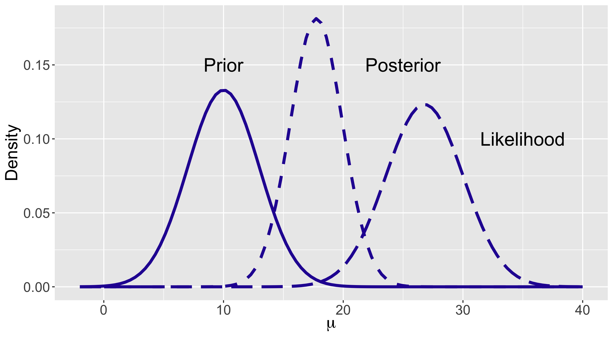
5 Simulation by Markov Chain Monte Carlo
5.1 Introduction
5.1.1 The Bayesian computation problem
The Bayesian models in Chapters 7 and 8 describe the application of conjugate priors where the prior and posterior belong to the same family of distributions. In these cases, the posterior distribution has a convenient functional form such as a Beta density or Normal density, and the posterior distributions are easy to summarize. For example, if the posterior density has a Normal form, one uses the R functions pnorm() and qnorm() to compute posterior probabilities and quantiles.
In a general Bayesian problem, the data \(Y\) comes from a sampling density \(f(y \mid \theta)\) and the parameter \(\theta\) is assigned a prior density \(\pi(\theta)\). After \(Y = y\) has been observed, the likelihood function is equal to \(L(\theta) = f(y \mid \theta)\) and the posterior density is written as \[\begin{equation} \pi(\theta \mid y) = \frac{\pi(\theta) L(\theta)} {\int \pi(\theta) L(\theta) d\theta}. \end{equation}\] If the prior and likelihood function do not combine in a helpful way, the normalizing constant \(\int \pi(\theta) L(\theta) d\theta\) can not be evaluated analytically. In addition, summaries of the posterior distribution are expressed as ratios of integrals. For example, the posterior mean of \(\theta\) is given by \[\begin{equation} E(\theta \mid y) = \frac{\int \theta \pi(\theta) L(\theta) d\theta} {\int \pi(\theta) L(\theta) d\theta}. \end{equation}\] Computation of the posterior mean requires the evaluation of two integrals, each not expressible in closed-form.
The following sections illustrate this general problem where integrals of the product of the likelihood and prior can not be evaluated analytically and so there are challenges in summarizing the posterior distribution.
5.1.2 Choosing a prior
Suppose you are planning to move to Buffalo, New York. You currently live on the west coast of the United States where the weather is warm and you are wondering about the snowfall you will encounter in Buffalo in the following winter season.
Suppose you focus on the quantity \(\mu\), the average snowfall during the month of January. After some reflection, you are 50 percent confident that \(\mu\) falls between 8 and 12 inches. That is, the 25th percentile of your prior for \(\mu\) is 8 inches and the 75th percentile is 12 inches.
A Normal prior
Once you have figured out your prior information, you construct a prior density for \(\mu\) that matches this information. In one of the end-of-chapter exercises, you can confirm that one possible density matching this information is a Normal density with mean 10 and standard deviation 3.
We collect data for the last 20 seasons in January. Assume that these observations of January snowfall are Normally distributed with mean \(\mu\) and standard deviation \(\sigma\). For simplicity we assume that the sampling standard deviation \(\sigma\) is equal to the observed standard deviation \(s\). The observed sample mean \(\bar y\) and corresponding standard error are given by \(\bar y = 26.785\) and \(se = s / \sqrt{n} = 3.236\).
With this Normal prior and Normal sampling, results from Chapter 8 are applied to find the posterior distribution of \(\mu\).
The normal_update() function is used to find the mean and standard deviation of the Normal posterior distribution.
(post1 <- normal_update(c(10, 3), c(ybar, se)))
[1] 17.75676 2.20020In Figure 5.1 the prior, likelihood, and posterior are displayed on the same graph. Initially you believed that \(\mu\) was close to 10 inches, the data says that the mean is in the neighborhood of 26.75 inches, and the posterior is a compromise, where \(\mu\) is in an interval about 17.75 inches.
An alternative prior
Looking at Figure 5.1, there is some concern about this particular Bayesian analysis. Since the main probability contents of the prior and likelihood functions have little overlap, there is serious conflict between the information in your prior and the information from the data.
Since we have a prior-data conflict, it would make sense to revisit our choice for a prior density on \(\mu\). Remember you specified the quartiles for \(\mu\) to be 8 and 12 inches. Another symmetric density that matches this information is a Cauchy density with location 10 inches and scale parameter 2 inches. The reader can confirm that the quantiles of a Cauchy(10, 2) do match your prior information. [Hint: use the qcauchy() R command.]
In Figure 5.2 we compare the Normal and Cauchy priors graphically. Remember these two densities have the same quartiles at 8 and 12 inches. But the two priors have different shapes – the Cauchy prior is more peaked near the median value 10 and has tails that decrease to zero at a slower rate than the Normal. In other words, the Cauchy curve has flatter tails than the Normal curve.
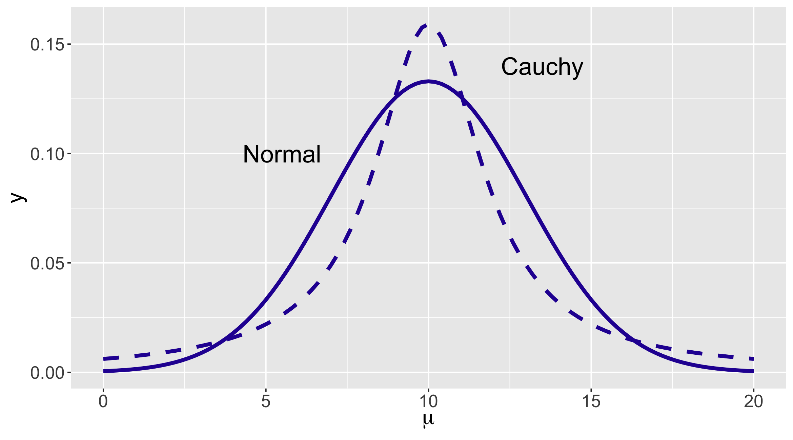
With the use of a \(\textrm{Cauchy}(10, 2)\) prior and the same Normal likelihood, the posterior density of \(\mu\) is
\[\begin{equation} \pi(\mu \mid y) \propto \pi(\mu)L(\mu) \propto \frac{1}{1 + \left(\frac{\mu - 10}{2}\right)^2} \times \exp\left\{-\frac{n}{2 \sigma^2}(\bar y - \mu)^2\right\}. \end{equation}\]
In contrast with a Normal prior, one can not algebraically simplify this likelihood times prior product to obtain a “nice” functional expression for the posterior density in terms of the mean \(\mu\). That raises the question – how does one implement a Bayesian analysis when one can not easily express the posterior density in a convenient functional form?
5.1.3 The two-parameter Normal problem
In the problem in learning about a Normal mean \(\mu\) in Chapter 8, it was assumed that the sampling standard deviation \(\sigma\) was known. This is unrealistic – in most settings, if one is uncertain about the mean of the population, then likely the population standard deviation will also be unknown. From a Bayesian perspective, since we have two unknown parameters \(\mu\) and \(\sigma\), this situation presents new challenges. One needs to construct a joint prior \(\pi(\mu, \sigma)\) for the two parameters – up to this point, we have only discussed constructing a prior distribution for a single parameter. Also, although one can compute the posterior density by the usual “prior times likelihood” recipe, it may be difficult to get nice analytic answers with this posterior to obtain particular inferences of interest.
5.1.4 Overview of the chapter
In Chapters 7 and 8, we illustrated the use of simulation to summarize posterior distributions of a specific functional form such as the Beta and Normal. In this chapter, we introduce a general class of algorithms, collectively called Markov chain Monte Carlo (MCMC), that can be used to simulate the posterior from general Bayesian models. These algorithms are based on a general probability model called a Markov chain and Section 9.2 describes this probability model for situations where the possible models are finite. Section 9.3 introduces the Metropolis sampler, a general algorithm for simulating from an arbitrary posterior distribution. Section 9.4 describes the implementation of this simulation algorithm for the Normal sampling problem with a Cauchy prior. Section 9.5 introduces another MCMC simulation algorithm, Gibbs sampling, that is well-suited for simulation from posterior distributions of many parameters. One issue in the implementation of these MCMC algorithms is that the simulation draws represent an approximate sample from the posterior distribution. Section 9.6 describes some common diagnostic methods for seeing if the simulated sample is a suitable exploration of the posterior distribution. Finally in Section 9.7, we describe the use of a general-purpose software program Just Another Gibbs Sampler (JAGS) and R interface for implementing these MCMC algorithms.
5.2 Markov Chains
5.2.1 Definition
Since our simulation algorithms are based on Markov chains, we begin by defining this class of probability models in the situation where the possible outcomes are finite. Suppose a person takes a random walk on a number line on the values 1, 2, 3, 4, 5, 6. If the person is currently at an interior value (2, 3, 4, or 5), in the next second she is equally likely to remain at that number or move to an adjacent number. If she does move, she is equally likely to move left or right. If the person is currently at one of the end values (1 or 6), in the next second she is equally likely to stay still or move to the adjacent location.
This is a simple example of a discrete Markov chain. A Markov chain describes probabilistic movement between a number of states. Here there are six possible states, 1 through 6, corresponding to the possible locations of the walker. Given that the person is at a current location, she moves to other locations with specified probabilities. The probability that she moves to another location depends only on her current location and not on previous locations visited. We describe movement between states in terms of transition probabilities – they describe the likelihoods of moving between all possible states in a single step in a Markov chain. We summarize the transition probabilities by means of a transition matrix \(P\): \[ P = \begin{bmatrix} .50 &.50& 0& 0& 0& 0 \\ .25 &.50& .25& 0& 0& 0\\ 0 &.25& .50& .25& 0& 0\\ 0 &0& .25& .50& .25& 0\\ 0 &0& 0& .25& .50& .25\\ 0 &0& 0& 0& .50& .50\\ \end{bmatrix} \] The first row in \(P\) gives the probabilities of moving to all states 1 through 6 in a single step from location 1, the second row gives the transition probabilities in a single step from location 2, and so on.
There are several important properties of this particular Markov chain. It is possible to go from every state to every state in one or more steps – a Markov chain with this property is said to be irreducible. Given that the person is in a particular state, if the person can only return to this state at regular intervals, then the Markov chain is said to be periodic. This example is aperiodic since the walker cannot return to the current state at regular intervals.
5.2.2 Some properties
We represent one’s current location as a probability row vector of the form \[\begin{equation*} p = (p_1, p_2, p_3, p_4, p_5, p_6), \end{equation*}\] where \(p_i\) represents the probability that the person is currently in state \(i\). If \(p^{(j)}\) represents the location of the traveler at step \(j\), then the location of the traveler at the \(j + 1\) step is given by the matrix product \[\begin{equation*} p^{(j+1)} = p^{(j)} P. \end{equation*}\] Moreover, if \(p^{(j)}\) represents the location at step \(j\), then the location of the traveler after \(m\) additional steps, \(p^{(j+m)}\), is given by the matrix product \[\begin{equation*} p^{(j+m)} = p^{(j)} P^m, \end{equation*}\] where \(P^m\) indicates the matrix multiplication \(P \times P \times ... \times P\) (the matrix \(P\) multiplied by itself \(m\) times).
To illustrate for our example using R, suppose that the person begins at state 3 that is represented in R by the vector p with a 1 in the third entry:
Code
p <- c(0, 0, 1, 0, 0, 0)We also define the transition matrix by use of the matrix() function.
Code
P <- matrix(c(.5, .5, 0, 0, 0, 0,
.25, .5, .25, 0, 0, 0,
0, .25, .5, .25, 0, 0,
0, 0, .25, .5, .25, 0,
0, 0, 0, .25, .5, .25,
0, 0, 0, 0, .5, .5),
nrow=6, ncol=6, byrow=TRUE)If one multiplies this vector by the matrix P, one obtains the probabilities of being in all six states after one move.
Code
print(p %*% P, digits = 5) [,1] [,2] [,3] [,4] [,5] [,6]
[1,] 0 0.25 0.5 0.25 0 0After one move (starting at state 3), our walker will be at states 2, 3, and 4 with respective probabilities 0.25, 0.5, and 0.25. If one multiplies p by the matrix P four times, one obtains the probabilities of being in the different states after four moves.
Code
print(p %*% P %*% P %*% P %*% P, digits = 5) [,1] [,2] [,3] [,4] [,5] [,6]
[1,] 0.10938 0.25 0.27734 0.21875 0.11328 0.03125Starting from state 3, this particular person is most likely will be in states 2, 3, and 4 after four moves.
For an irreducible, aperiodic Markov chain, there is a limiting behavior of the matrix power \(P^m\) as \(m\) approaches infinity. Specifically, this limit is equal to \[\begin{equation} W = \lim_{m \rightarrow \infty} P^m, \end{equation}\] where \(W\) has common rows equal to \(w\). The implication of this result is that, as one takes an infinite number of moves, the probability of landing at a particular state does not depend on the initial starting state.
One can demonstrate this result empirically for our example. Using a loop, we take the transition matrix \(P\) to the 100th power by repeatedly multiplying the transition matrix by itself. From this calculation below, note that the rows of the matrix Pm appear to be approaching a constant vector. Specifically, it appears the constant vector \(w\) is equal to (0.1, 0.2, 0.2, 0.2, 0.2, 0.1).
Code
Pm <- diag(rep(1, 6))
for(j in 1:100){
Pm <- Pm %*% P
}
print(Pm, digits = 5) [,1] [,2] [,3] [,4] [,5] [,6]
[1,] 0.100009 0.20001 0.20001 0.19999 0.19999 0.099991
[2,] 0.100007 0.20001 0.20000 0.20000 0.19999 0.099993
[3,] 0.100003 0.20000 0.20000 0.20000 0.20000 0.099997
[4,] 0.099997 0.20000 0.20000 0.20000 0.20000 0.100003
[5,] 0.099993 0.19999 0.20000 0.20000 0.20001 0.100007
[6,] 0.099991 0.19999 0.19999 0.20001 0.20001 0.100009From this result about the limiting behavior of the matrix power \(P^m\), one can derive a rule for determining this constant vector. Suppose we can find a probability vector \(w\) such that \(wP = w\). This vector \(w\) is said to be the stationary distribution. If a Markov chain is irreducible and aperiodic, then it has a unique stationary distribution. Moreover, as illustrated above, the limiting distribution of this Markov chain, as the number of steps approaches infinity, will be equal to this stationary distribution.
5.2.3 Simulating a Markov chain
Another method for demonstrating the existence of the stationary distribution of our Markov chain by running a simulation experiment. We start our random walk at a particular state, say location 3, and then simulate many steps of the Markov chain using the transition matrix \(P\). The relative frequencies of our traveler in the six locations after many steps will eventually approach the stationary distribution \(w\).
In R we have already defined the transition matrix P. To begin the simulation exercise, we set up a storage vector s for the locations of our traveler in the random walk. We indicate that the starting location for our traveler is state 3 and perform a loop to simulate 10,000 draws from the Markov chain. We use the sample() function to simulate one step – the arguments to this function indicate that we are sampling a single value from the set {1, 2, 3, 4, 5, 6} with probabilities given by the \(s_j^1\) row of the transition matrix \(P\), where \(s_j^1\) is the current location of our traveler.
Code
s <- vector("numeric", 10000)
s[1] <- 3
for (j in 2:10000)
s[j] <- sample(1:6, size=1, prob=P[s[j - 1], ])Suppose that we record the relative frequencies of each of the outcomes 1, 2, …, 6 after each iteration of the simulation. Figure 5.3 graphs the relative frequencies of each of the outcomes as a function of the iteration number.
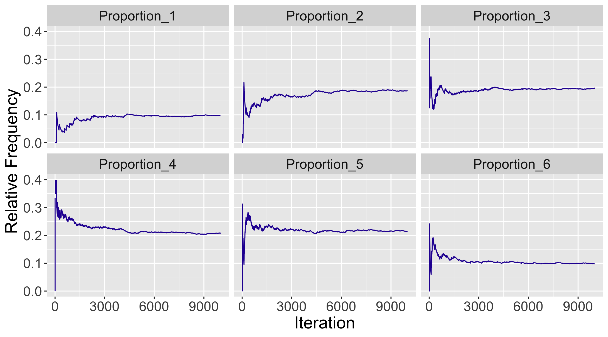
It appears from Figure 5.3 that the relative frequencies of the states are converging to the stationary distribution \(w = (0.1, 0.2, 0.2, 0.2, 0.2, 0.1).\) One confirms that this specific vector \(w\) is indeed the stationary distribution of this chain by multiplying \(w\) by the transition matrix \(P\) and noticing that the product is equal to \(w\).
Code
w <- matrix(c(.1,.2,.2,.2,.2,.1), nrow=1, ncol=6)
w %*% P [,1] [,2] [,3] [,4] [,5] [,6]
[1,] 0.1 0.2 0.2 0.2 0.2 0.15.3 The Metropolis Algorithm
5.3.1 Example: Walking on a number line
Markov chains can be used to sample from an arbitrary probability distribution. To introduce a general Markov chain sampling algorithm, we illustrate sampling from a discrete distribution. Suppose one defines a discrete probability distribution on the integers 1, …, \(K\).
As an example, we write a short function pd() in R taking on the values 1, …, 8 with probabilities proportional to the values 5, 10, 4, 4, 20, 20, 12, and 5. Note that these probabilities don’t sum to one, but we will shortly see that only the relative sizes of these values are relevant in this algorithm. A line graph of this probability distribution is displayed in Figure 5.4.
pd <- function(x){
values <- c(5, 10, 4, 4, 20, 20, 12, 5)
ifelse(x %in% 1:length(values), values[x], 0)
}
prob_dist <- data.frame(x = 1:8,
prob = pd(1:8))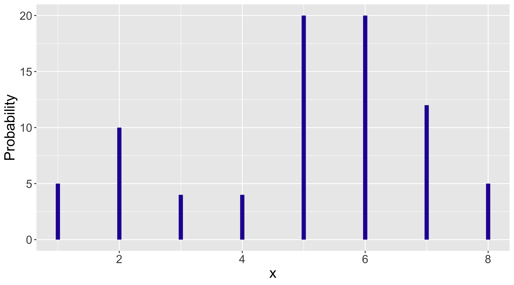
To simulate from this probability distribution, we will take a simple random walk described as follows.
We start at any possible location of our random variable from 1 to \(K = 8\).
To decide where to visit next, a fair coin is flipped. If the coin lands heads, we think about visiting the location one value to the left, and if coin lands tails, we consider visiting the location one value to right. We call this location the “candidate” location.
We compute \[\begin{equation} R = \frac{pd(candidate)}{pd(current)}, \end{equation}\] the ratio of the probabilities at the candidate and current locations.
We spin a continuous spinner that lands anywhere from 0 to 1 – call the random spin \(X\). If \(X\) is smaller than \(R\), we move to the candidate location, and otherwise we remain at the current location.
Steps 1 through 4 define an irreducible, aperiodic Markov chain on the state values {1, 2, …, 8} where Step 1 gives the starting location and the transition matrix \(P\) is defined by Steps 2 through 4. One way of “discovering” the discrete probability distribution \(pd\) is by starting at any location and walking through the distribution many times repeating Steps 2, 3, and 4 (propose a candidate location, compute the ratio, and decide whether to visit the candidate location). If this process is repeated for a large number of steps, the distribution of our actual visits should approximate the probability distribution \(pd\).
A R function random_walk() is written implementing this random walk algorithm. There are three inputs to this function, the probability distribution pd, the starting location start and the number of steps of the algorithm s.
random_walk <- function(pd, start, num_steps){
y <- rep(0, num_steps)
current <- start
for (j in 1:num_steps){
candidate <- current + sample(c(-1, 1), 1)
prob <- pd(candidate) / pd(current)
if (runif(1) < prob) current <- candidate
y[j] <- current
}
return(y)
}We have already defined the probability distribution by use of the function pd(). Below, we implement the random walk algorithm by inputting this probability function, starting at the value \(X = 4\) and running the algorithm for \(s\) = 10,000 iterations.
out <- random_walk(pd, 4, 10000)
data.frame(out) %>% group_by(out) %>%
summarize(N = n(), Prob = N / 10000) -> SIn Figure 5.5 a histogram of the simulated values from the random walk is compared with the actual probability distribution. Note that the collection of simulated draws appears to be a close match to the true probabilities.
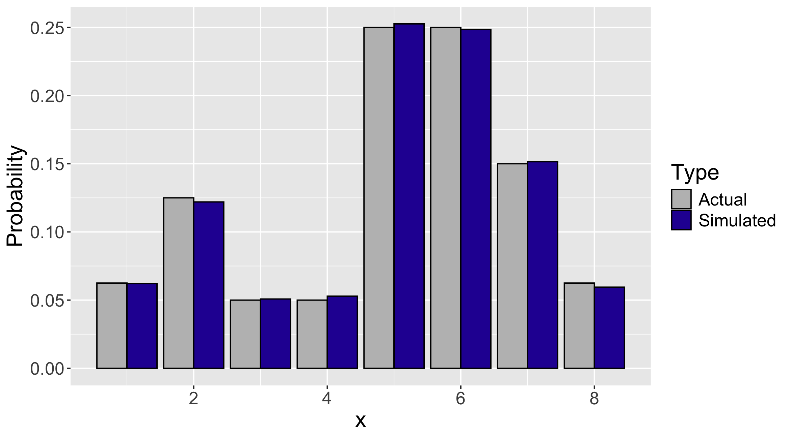
5.3.2 The general algorithm
A popular way of simulating from a general continuous posterior distribution is by using a generalization of the discrete Markov chain setup described in the random walk example in the previous section. The Markov chain Monte Carlo sampling strategy sets up an irreducible, aperiodic Markov chain for which the stationary distribution equals the posterior distribution of interest. This method, called the Metropolis algorithm, is applicable to a wide range of Bayesian inference problems.
Here the Metropolis algorithm is presented and illustrated. This algorithm is a special case of the Metropolis-Hastings algorithm, where the proposal distribution is symmetric (e.g. Uniform or Normal).
Suppose the posterior density is written as \[\begin{equation*} \pi_n(\theta) \propto \pi(\theta) L(\theta), \end{equation*}\] where \(\pi(\theta)\) is the prior and \(L(\theta)\) is the likelihood function. In this algorithm, it is not necessary to compute the normalizing constant – only the product of likelihood and prior is needed.
(START) As in the random walk algorithm, we begin by selecting any \(\theta\) value where the posterior density is positive – the value we select \(\theta^{(0)}\) is the starting value.
(PROPOSE) Given the current simulated value \(\theta^{(j)}\) we propose a new value \(\theta^P\) which is selected at random in the interval (\(\theta^{(j)} - C, \theta^{(j)} + C)\) where \(C\) is a preselected constant.
(ACCEPTANCE PROBABILITY) One computes the ratio \(R\) of the posterior density at the proposed value and the current value: \[\begin{equation} R = \frac{\pi_n(\theta^{P})}{\pi_n(\theta^{(j)})}. \end{equation}\] The acceptance probability is the minimum of \(R\) and 1: \[\begin{equation} PROB = \min\{R, 1\}. \end{equation}\]
(MOVE OR STAY?) One simulates a Uniform random variable \(U\). If \(U\) is smaller than the acceptance probability \(PROB\), one moves to the proposed value \(\theta^P\); otherwise one stays at the current value \(\theta^{(j)}\). In other words, the next simulated draw \(\theta^{(j+1)}\) \[\begin{equation} \theta^{(j+1)} = \begin{cases} \theta^{p} & \mbox{if} \, \, U < PROB, \\ \theta^{(j)} & \mbox{elsewhere}. \end{cases} \end{equation}\]
(CONTINUE) One continues by returning to Step 2 – propose a new simulated value, compute an acceptance probability, decide to move to the proposed value or stay, and so on.
Figure 5.6 illustrates how the Metropolis algorithm works. The bell-shaped curve is the posterior density of interest. In the top-left panel, the solid dot represents the current simulated draw and the black bar represents the proposal region. One simulates the proposed value represented by the “P” symbol. One computes the probability of accepting this proposed value – in this case, this probability is 0.02. By simulating a Uniform draw, one decides not to accept this proposal and the new simulated draw is the current value shown in the top-right panel. A different scenario is shown in the bottom panels. One proposes a value corresponding to a higher posterior density value. The probability of accepting this proposal is 1 and the bottom left graph shows that the new simulated draw is the proposed value.
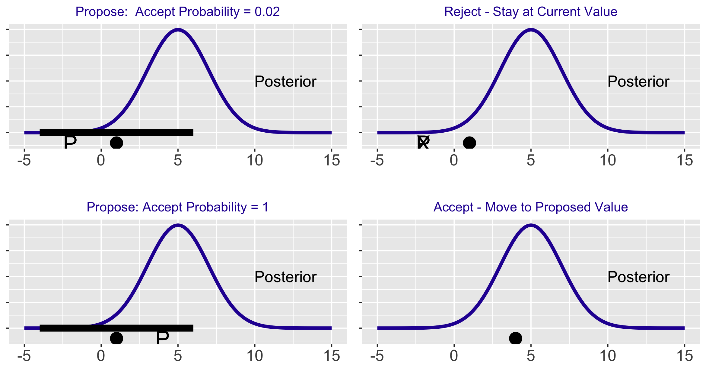
5.3.3 A general function for the Metropolis algorithm
Since the Metropolis is a relatively simple algorithm, one writes a short function in R to implement this sampling for an arbitrary probability distribution.
The function metropolis() has five inputs: logpost is a function defining the logarithm of the density, current is the starting value, C defines the neighborhood where one looks for a proposal value, iter is the number of iterations of the algorithm, and ... denotes any data or parameters needed in the function logpost().
metropolis <- function(logpost, current, C, iter, ...){
S <- rep(0, iter)
n_accept <- 0
for(j in 1:iter){
candidate <- runif(1, min=current - C,
max=current + C)
prob <- exp(logpost(candidate, ...) -
logpost(current, ...))
accept <- ifelse(runif(1) < prob, "yes", "no")
current <- ifelse(accept == "yes",
candidate, current)
S[j] <- current
n_accept <- n_accept + (accept == "yes")
}
list(S=S, accept_rate=n_accept / iter)
}5.4 Example: Cauchy-Normal problem
To illustrate using the metropolis() function, suppose we wish to simulate 1000 values from the posterior distribution in our Buffalo snowfall problem where one uses a Cauchy prior to model one’s prior opinion about the mean snowfall amount. Recall that the posterior density of \(\mu\) is proportional to \[\begin{equation}
\pi(\mu \mid y) \propto \frac{1}{1 + \left(\frac{\mu - 10}{2}\right)^2} \times \exp\left\{-\frac{n}{2 \sigma^2}(\bar y - \mu)^2\right\}.
\end{equation}\] There are four inputs to this posterior – the mean \(\bar y\) and corresponding standard error \(\sigma / \sqrt{n}\), and the location parameter 10 and the scale parameter 2 for the Cauchy prior. Recall that for the Buffalo snowfall, we observed \(\bar y = 26.785\) and \(\sigma / \sqrt{n} = 3.236\).
First we need to define a short function defining the logarithm of the posterior density function. Ignoring constants, the logarithm of this density is given by \[\begin{equation} \log \pi(\mu \mid y) = - \log\left\{1 + \left(\frac{\mu - 10}{2}\right)^2\right\} -\frac{n}{2 \sigma^2}(\bar y - \mu)^2. \end{equation}\]
The function lpost() returns the value of the logarithm of the posterior where s is a list containing the four inputs ybar, se, loc, and scale.
lpost <- function(theta, s){
dcauchy(theta, s$loc, s$scale, log = TRUE) +
dnorm(s$ybar, theta, s$se, log = TRUE)
}A list named s is defined that contains these inputs for this particular problem.
s <- list(loc = 10, scale = 2,
ybar = mean(data$JAN),
se = sd(data$JAN) / sqrt(20))Now we are ready to apply the Metropolis algorithm as coded in the function metropolis(). The inputs to this function are the log posterior function lpost, the starting value \(\mu = 5\), the width of the proposal density \(C = 20\), the number of iterations 10,000, and the list s that contains the inputs to the log posterior function.
out <- metropolis(lpost, 5, 20, 10000, s)The output variable out has two components – S is a vector of the simulated draws and accept_rate gives the acceptance rate of the algorithm.
5.4.1 Choice of starting value and proposal region
In implementing this Metropolis algorithm, the user has to make two choices. One needs to select a starting value for the algorithm and select a value of \(C\) which determines the width of the proposal region.
Assuming that the starting value is a place where the density is positive, then this particular choice in usual practice is not critical. In the event where the probability density at the starting value is small, the algorithm will move towards the region where the density is more probable.
The choice of the constant \(C\) is more critical. If one chooses a very small value of \(C\), then the simulated values from the algorithm tend to be strongly correlated and it takes a relatively long time to explore the entire probability distribution. In contrast, if \(C\) is chosen too large, then it is more likely that proposal values will not be accepted and the simulated values tend to get stuck at the current values. One monitors the choice of \(C\) by computing the acceptance rate, the proportion of proposal values that are accepted. If the acceptance rate is large, that indicates that the simulated values are highly correlated and the algorithm is not efficiently exploring the distribution. If the acceptance rate is low, then few candidate values are accepted and the algorithm tends to be ``sticky” or stuck at current draws.
We illustrate different choices of \(C\) for the mean amount of Buffalo snowfall problem. In each case, we start with the value \(\mu = 20\) and try the \(C\) values 0.3, 3, 30, and 200. In each case, we simulate 5000 values of the MCMC chain. Figure 5.7 shows in each case a line graph of the simulated draws against the iteration number and the acceptance rate of the algorithm is displayed.
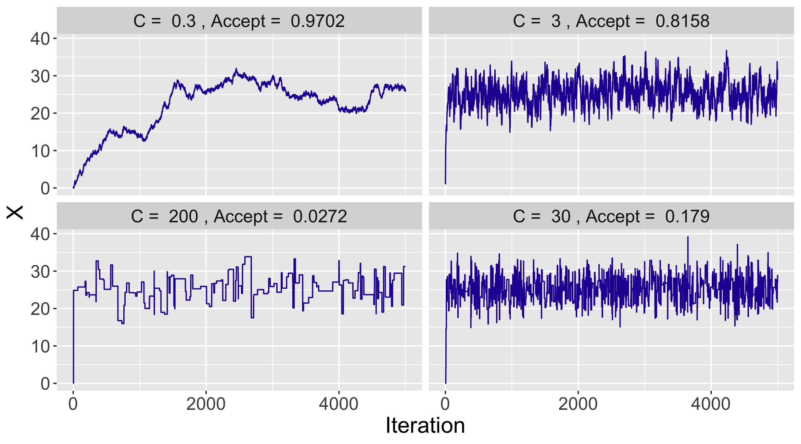
When one chooses a small value \(C = 0.3\) (top-left panel in Figure 5.7), note that the graph of simulated draws has a snake-like appearance. Due to the strong autocorrelation of the simulated draws, the sampler does a relatively poor job of exploring the posterior distribution. One measure that this sampler is not working well is the large acceptance rate of 0.9702. On the other hand, if one uses a large value \(C = 200\) (bottom-right panel in Figure 5.7), the flat-portions in the graph indicates there are many occurrences where the chain will not move from the current value. The low acceptance rate of 0.0272 indicates this problem. The more moderate values of \(C = 3\) and \(C = 30\) (top-right and bottom-left panels in Figure 5.7) produce more acceptable streams of simulated values, although the respectively acceptance rates (0.8158 and 0.179) are very different.
In practice, it is recommended that the Metropolis algorithm has an acceptance rate between 20% and 40%. For this example, this would suggest trying an alternative choice of \(C\) between 2 and 20.
5.4.2 Collecting the simulated draws
Using MCMC diagnostic methods that will be described in Section 9.6, one sees that the simulated draws are a reasonable approximation to the posterior density of \(\mu\). One displays the posterior density by computing a density estimate of the simulated sample. In Figure 5.8, we plot the prior, likelihood, and posterior density for the mean amount of Buffalo snowfall \(\mu\) using the Cauchy prior. Recall that we have prior-data conflict, the prior says that the mean snowfall is about 10 inches and the likelihood indicates that the mean snowfall was around 27 inches. When a Normal prior was applied, we found that the posterior mean was 17.75 inches – actually the posterior density has little overlap with the prior or the likelihood in Figure 5.1. In contrast, it is seen from Figure 5.8 that the posterior density using the Cauchy density resembles the likelihood. Essentially this posterior analysis says that our prior information was off the mark and the posterior is most influenced by the data.
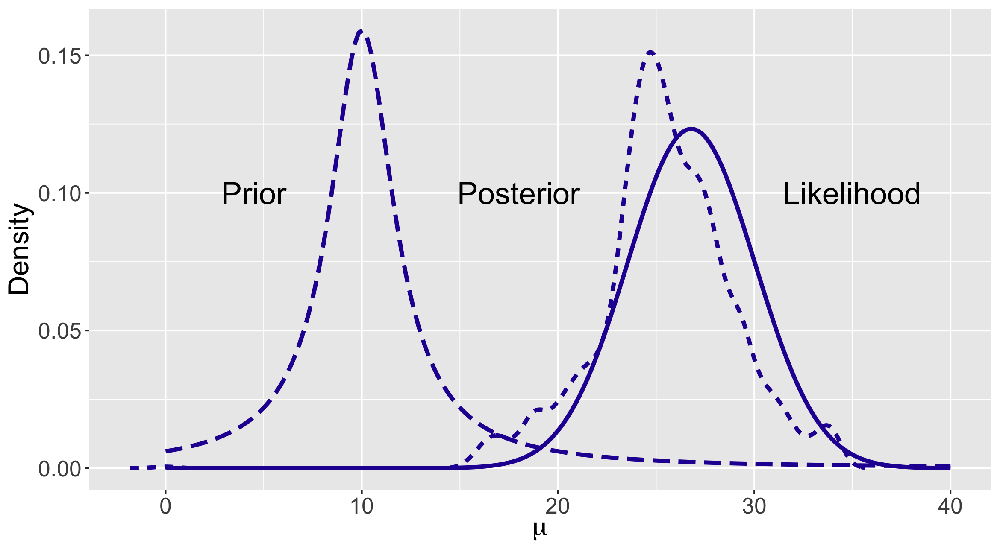
5.5 Gibbs Sampling
In our examples, we have focused on the use of the Metropolis sampler in simulating from a probability distribution of a single variable. Here we introduce an MCMC algorithm for simulating from a probability distribution of several variables based on conditional distributions: the Gibbs sampling algorithm. As we will see, it facilitates parameter estimation in Bayesian models with more than one parameter, providing data analysts much flexibility in specifying Bayesian models.
5.5.1 Bivariate discrete distribution}
To introduce the Gibbs sampling method, suppose that the random variables \(X\) and \(Y\) each take on the values 1, 2, 3, 4, and the joint probability distribution is given in the following table.
| (Y) | 1 | 2 | 3 | 4 |
| 1 | 0.100 | 0.075 | 0.050 | 0.025 |
| 2 | 0.075 | 0.100 | 0.075 | 0.050 |
| 3 | 0.050 | 0.075 | 0.100 | 0.075 |
| 4 | 0.025 | 0.050 | 0.075 | 0.100 |
Suppose it is of interest to simulate from this joint distribution of \((X, Y)\). We set up a Markov chain by taking simulated draws from the conditional distributions \(f(x \mid y)\) and \(f(y \mid x)\). Let’s describe this Markov chain by example. Suppose the algorithm starts at the value \(X = 1\).
- [Step 1] One simulates \(Y\) from the conditional distribution \(f(y \mid X = 1)\). This conditional distribution is represented by the probabilities in the first column of the probability matrix.
| (Y) | Probability |
|---|---|
| 1 | 0.100 |
| 2 | 0.075 |
| 3 | 0.050 |
| 4 | 0.025 |
(Actually these values are proportional to the distribution \(f(y \mid X = 1)\).) Suppose we perform this simulation and obtain \(Y = 2\).
- [Step 2] Next one simulates \(X\) from the conditional distribution of \(f(x \mid Y = 2).\) This distribution is found by looking at the probabilities in the second row of the probability matrix.
| (X) | 1 | 2 | 3 | 4 |
|---|---|---|---|---|
| Probability | 0.075 | 0.100 | 0.075 | 0.050 |
Suppose the simulated draw from this distribution is \(X = 3\).
By implementing Steps 1 and 2, we have one iteration of Gibbs sampling, obtaining the simulated pair \((X, Y) = (3, 2)\). To continue this algorithm, we repeat Steps 1 and 2 many times where we condition in each case on the most recently simulated values of \(X\) or \(Y\).
By simulating successively from the distributions \(f(y \mid x)\) and \(f(x \mid y)\), one defines a Markov chain that moves from one simulated pair \((X^{(j)}, Y^{(j)})\) to the next simulated pair \((X^{(j+1)}, Y^{(j+1)})\). In theory, after simulating from these two conditional distributions a large number of times, the distribution will converge to the joint probability distribution of \((X, Y)\).
We write a short R function gibbs_discrete() to implement Gibbs sampling for a two-parameter discrete distribution where the probabilities are represented in a matrix. One inputs the matrix p and the output is a matrix of simulated draws of \(X\) and \(Y\) where each row corresponds to a simulated pair. By default, the sampler starts at the value \(X = 1\) and 1000 iterations of the algorithm will be taken.
gibbs_discrete <- function(p, i = 1, iter = 1000){
x <- matrix(0, iter, 2)
nX <- dim(p)[1]
nY <- dim(p)[2]
for(k in 1:iter){
j <- sample(1:nY, 1, prob = p[i, ])
i <- sample(1:nX, 1, prob = p[, j])
x[k, ] <- c(i, j)
}
x
}The function gibbs_discrete() is run using the probability matrix for our example. The output is converted to a data frame and we tally the counts for each possible pair of values of \((X, Y)\), and then divide the counts by the simulation sample size of 1000. One can check that the relative frequencies of these pairs are good approximations to the joint probabilities.
sp <- data.frame(gibbs_discrete(p))
names(sp) <- c("X", "Y")
table(sp) / 1000
Y
X 1 2 3 4
1 0.086 0.058 0.050 0.020
2 0.061 0.081 0.079 0.048
3 0.046 0.070 0.090 0.079
4 0.017 0.036 0.068 0.1115.5.2 Beta-binomial sampling
The previous example demonstrated Gibbs sampling for a two-parameter discrete distribution. In fact, the Gibbs sampling algorithm works for any two-parameter distribution. To illustrate, consider a familiar Bayesian model discussed in Chapter 7. Suppose we flip a coin \(n\) times and observe \(y\) heads where the probability of heads is \(p\), and our prior for the heads probability is described by a Beta curve with shape parameters \(a\) and \(b\). It is convenient to write \(X \mid Y = y\) as the conditional distribution of \(X\) given \(Y=y\). Using this notation we have
\[\begin{equation} Y \mid p \sim \textrm{Binomial}(n, p), \end{equation}\] \[\begin{equation} p \sim \textrm{Beta}(a, b). \end{equation}\]
To implement Gibbs sampling for this situation, one needs to identify the two conditional distributions \(Y \mid p\) and \(p \mid Y\). First write down the joint density of \((Y, p)\) which is found by multiplying the marginal density \(\pi(p)\) with the conditional density \(f(y \mid p)\).
\[\begin{eqnarray} f(Y = y, p) &=& \pi(p)f(Y = y \mid p) \nonumber \\ &=& \left[\frac{1}{B(a, b)} p^{a - 1} (1-p)^{b-1}\right] \left[{n \choose y} p^y (1 - p)^{n-y}\right]. \nonumber \\ \end{eqnarray}\]
The conditional density \(f(Y = y \mid p)\) is found by fixing a value of the proportion \(p\) and then the only random variable is \(Y\). This distribution is \(\textrm{Binomial}(n, p)\) which actually was given in the statement of the problem.
Turning things around, the conditional density \(\pi(p \mid y)\) takes the number of successes \(y\) and views the joint density as a function only of the random variable \(p\). Ignoring constants, we see this conditional density is proportional to \[\begin{equation} p^{y + a - 1} (1 - p)^{n - y + b - 1}, \end{equation}\] which we recognize as a Beta distribution with shape parameters \(y + a\) and \(n - y + b\). Using our notation, we have \(p \mid y \sim \textrm{Beta}(y + a, n - y + b)\).
Once these conditional distributions are identified, it is straightforward to write an algorithm to implement Gibbs sampling. For example, suppose \(n = 20\) and the prior density for \(p\) is \(\textrm{Beta}(5, 5)\). Suppose that the current simulated value of \(p\) is \(p^{(j)}\).
- Simulate \(Y^{(j)}\) from a \(\textrm{Binomial}(20, p^{(j)})\) distribution.
y <- rbinom(1, size = 20, prob = p)- Given the current simulated value \(y^{(j)}\), simulate \(p^{(j+1)}\) from a Beta distribution with shape parameters \(y^{(j)} + 5\) and \(20 - y^{(j)} + 5\).
p <- rbeta(1, y + a, n - y + b)The R function gibbs_betabin() will implement Gibbs sampling for this problem. One inputs the sample size \(n\) and the shape parameters \(a\) and \(b\). By default, one starts the algorithm at the proportion value \(p = 0.5\) and one takes 1000 iterations of the algorithm.
gibbs_betabin <- function(n, a, b, p = 0.5, iter = 1000){
x <- matrix(0, iter, 2)
for(k in 1:iter){
y <- rbinom(1, size = n, prob = p)
p <- rbeta(1, y + a, n - y + b )
x[k, ] <- c(y, p)
}
x
}Below we run Gibbs sampling for this Beta-Binomial model with \(n = 20\), \(a = 5\), and \(b = 5\). After performing 1000 iterations, one regards the matrix sp as an approximate simulated sample from the joint distribution of \(Y\) and \(p\). A histogram is constructed of the simulated draws of \(Y\) in Figure 5.9. This graph represents an approximate sample from the marginal distribution \(f(y)\) of \(Y\).
sp <- data.frame(gibbs_betabin(20, 5, 5))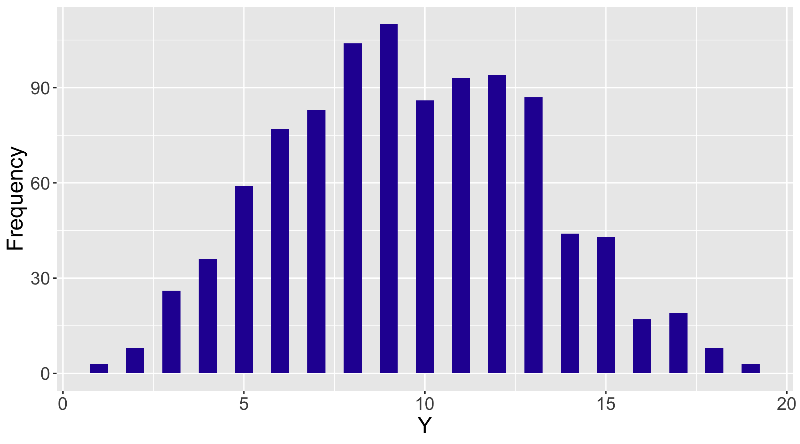
5.5.3 Normal sampling – both parameters unknown
In Chapter 8, we considered the situation of sampling from a Normal distribution with mean \(\mu\) and standard deviation \(\sigma\). To simplify this to a one-parameter model, we assumed that the value of \(\sigma\) was known and focused on the problem of learning about the mean \(\mu\). Since Gibbs sampling provides us to simulate from posterior distributions of more than one parameter, we can generalize to the more realistic situation where both the mean and the standard deviation are unknown.
Suppose we take a sample of \(n\) observations \(Y_1, .., Y_n\) from a Normal distribution with mean \(\mu\) and variance \(\sigma^2\). Recall the sampling density of \(Y_i\) has the form \[\begin{equation} f(y_i \mid \mu, \sigma) = \frac{1}{\sqrt{2 \pi} \sigma} \exp\left\{- \frac{1}{2 \sigma^2}(y_i - \mu)^2\right\}. \end{equation}\] It will be convenient to reexpress the variance \(\sigma\) by the precision \(\phi\) where \[\begin{equation} \phi = \frac{1}{\sigma^2}. \end{equation}\] The precision \(\phi\) reflects the strength in knowledge about the location of the observation \(Y_i\). If \(Y_i\) is likely to be close to the mean \(\mu\), then the variance \(\sigma^2\) would be small and so the precision \(\phi\) would be large. So we restate the sampling model as follows. The observations \(Y_1, .., Y_n\) are a random sample from a Normal density with mean \(\mu\) and precision \(\phi\), where the sampling density of \(Y_i\) is given by \[\begin{equation} f(y_i \mid \mu, \phi) = \frac{\sqrt{\phi}}{\sqrt{2 \pi}} \exp\left\{- \frac{\phi}{2}(y_i - \mu)^2\right\}. \end{equation}\]
The next step is to construct a prior density on the parameter vector \((\mu, \phi)\). A convenient choice for this prior is to assume that one’s opinion about the location of the mean \(\mu\) is independent of one’s belief about the location of the precision \(\phi\). So we assume that \(\mu\) and \(\phi\) are independent, so one writes the joint prior density as \[\begin{equation} \pi(\mu, \phi) = \pi_{\mu}(\mu) \pi_{\phi}(\phi), \end{equation}\] where \(\pi_{\mu}()\) and \(\pi_{\phi}()\) are marginal densities. For convenience, each of these marginal priors are assigned conjugate forms: we assume that \(\mu\) is Normal with mean \(\mu_0\) and precision \(\phi_0\): \[\begin{equation} \pi_{\mu}(\mu) = \frac{\sqrt{\phi_0}}{\sqrt{2 \pi}} \exp\left\{-\frac{\phi_0}{2}(\mu - \mu_0)^2\right\}. \end{equation}\] The prior for the precision parameter \(\phi\) is assumed Gamma with parameters \(a\) and \(b\): \[\begin{equation} \pi_{\phi}(\phi) = \frac{b^a}{\Gamma(a)} \phi^{a-1} \exp(-b \phi), \, \, \phi > 0. \end{equation}\]
Once values of \(y_1, ..., y_n\) are observed, the likelihood is the density of these Normal observations viewed as a function of the mean \(\mu\) and the precision parameter \(\phi\). Simplifying the expression and removing constants, one obtains: \[\begin{align} L(\mu, \phi) &=\prod_{i=1}^n \frac{\sqrt{\phi}}{\sqrt{2 \pi}} \exp\left\{-\frac{\phi}{2}(y_i - \mu)^2\right\} \nonumber \\ & \propto \phi^{n/2} \exp\left\{-\frac{\phi}{2}\sum_{i=1}^n (y_i - \mu)^2\right\}. \end{align}\]
To implement Gibbs sampling, one first writes down the expression for the posterior density as the product of the likelihood and prior where any constants not involving the parameters are removed.
\[\begin{eqnarray} \pi(\mu, \phi \mid y_1, \cdots, y_n ) &\propto & \phi^{n/2} \exp\left\{-\frac{\phi}{2}\sum_{i=1}^n (y_i - \mu)^2\right\} \nonumber \\ & \times & \exp\left\{-\frac{\phi_0}{2}(\mu - \mu_0)^2\right\} \phi^{a-1} \exp(-b \phi). \end{eqnarray}\]
Next, the two conditional posterior distributions \(\pi(\mu \mid \phi, y_1, \cdots, y_n)\) and \(\pi(\phi \mid \mu, y_1, \cdots, y_n)\) are identified.
- The first conditional density \(\pi(\mu \mid \phi, y_1, \cdots, y_n)\) follows from the work in Chapter 8 on Bayesian inference about a mean with a conjugate prior when the sampling standard deviation was assumed known. One obtains that this conditional distribution \(\pi(\mu \mid \phi, y_1, \cdots, y_n)\) is Normal with mean \[\begin{equation} \mu_n = \frac{\phi_0 \mu_0 + n \phi \bar y }{\phi_0 + n \phi}. \end{equation}\] and standard deviation \[\begin{equation} \sigma_n = \sqrt{\frac{1}{\phi_0 + n \phi}}. \end{equation}\]
- Collecting terms, the second conditional density \(\pi(\phi \mid \mu, y_1, \cdots, y_n)\) is proportional to \[\begin{equation} \pi(\phi \mid \mu, y_1, \cdots y_n) \propto \phi^{n/2 + a - 1} \exp\left\{-\phi\left[\frac{1}{2}\sum_{i=1}^n (y_i- \mu)^2 + b\right]\right\}. \\ \end{equation}\] The second conditional distribution \(\pi(\phi \mid \mu, y_1, \cdots, y_n)\) is seen to be a Gamma density with parameters \[\begin{equation} a_n = \frac{n}{2} + a, \end{equation}\] \[\begin{equation} b_n = \frac{1}{2}\sum_{i=1}^n (y_i - \mu)^2 + b. \end{equation}\]
An R function gibbs_normal() is written to implement this Gibbs sampling simulation. The inputs to this function are a list s containing the vector of observations y and the prior parameters mu0, phi0, a, and b, the starting value of the precision parameter \(\phi\), phi, and the number of Gibbs sampling iterations S. This function is similar in structure to the gibbs_betabin() function – the two simulations in the Gibbs sampling are accomplished by use of the rnorm() and ```rgamma()} functions.
gibbs_normal <- function(s, phi = 0.002, iter = 1000){
ybar <- mean(s$y)
n <- length(s$y)
mu0 <- s$mu0
phi0 <- s$phi0
a <- s$a
b <- s$b
x <- matrix(0, iter, 2)
for(k in 1:iter){
mun <- (phi0 * mu0 + n * phi * ybar) /
(phi0 + n * phi)
sigman <- sqrt(1 / (phi0 + n * phi))
mu <- rnorm(1, mean = mun, sd = sigman)
an <- n / 2 + a
bn <- sum((s$y - mu) ^ 2) / 2 + b
phi <- rgamma(1, shape = an, rate = bn)
x[k, ] <- c(mu, phi)
}
x
}We run this function for our Buffalo snowfall example where now the sampling model is Normal with both the mean \(\mu\) and standard deviation \(\sigma\) unknown. The prior distribution assumes that \(\mu\) and the precision \(\phi\) are independent, where \(\mu\) is Normal with mean 10 and standard deviation 3 (i.e. precision \(1/3^2\)), and \(\phi\) is Gamma with \(a = b = 1\). The output of this function is a matrix ```out} where the two columns of the matrix correspond to random draws of \(\mu\) and \(\phi\) from the posterior distribution.
s <- list(y = data$JAN, mu0 = 10, phi0 = 1/3^2, a = 1, b = 1)
out <- gibbs_normal(s, iter=10000)By performing the transformation \(\sigma = \sqrt{1 / \phi}\), one obtains a sample of the simulated draws of the standard deviation \(\sigma\). Figure 5.10 displays a scatterplot of the posterior draws of \(\mu\) and \(\sigma\).
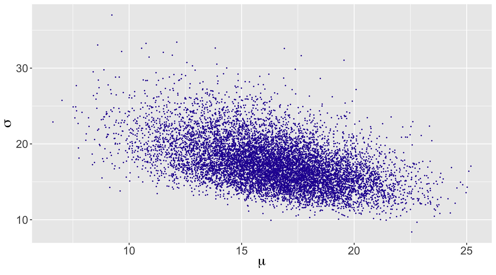
5.6 MCMC Inputs and Diagnostics
5.6.1 Burn-in, starting values, and multiple chains
In theory, the Metropolis and Gibbs sampling algorithms will produce simulated draws that converge to the posterior distribution of interest. But in typical practice, it may take a number of iterations before the simulation values are close to the posterior distribution. So in general it is recommended that one run the algorithm for a number of “burn-in” iterations before one collects iterations for inference. The JAGS software that is introduced in Section 9.7 will allow the user to specify the number of burn-in iterations.
In the examples, we have illustrated running a single “chain” where one has a single starting value and one collects simulated draws from many iterations. It is possible that the MCMC sample will depend on the choice of starting value. So a general recommendation is to run the MCMC algorithm several times using different starting values. In this case, one will have multiple MCMC chains. By comparing the inferential summaries from the different chains one explores the sensitivity of the inference to the choice of starting value. Although we will focus on the use of a single chain, we will explore the use of different starting values and multiple chains in an example in this chapter. The JAGS software and other programs to implement MCMC will allow for different starting values and several chains.
5.6.2 Diagnostics
The output of a single chain from the Metropolis and Gibbs algorithms is a vector or matrix of simulated draws. Before one believes that a collection of simulated draws is a close approximation to the posterior distribution, some special diagnostic methods should be initially performed.
Trace plot
It is helpful to construct a trace plot which is a line plot of the simulated draws of the parameter of interest graphed against the iteration number. Figure 5.11 displays a trace plot of the simulated draws of \(\mu\) from the Metropolis algorithm for our Buffalo snowfall example for Normal sampling (known standard deviation) with a Cauchy prior. Section 9.4.1 shows some sample trace plots for Metropolis sampler. As discussed in that section, it is undesirable to have a snack-like appearance in the trace plot indicating a high acceptance rate. Also, Section 9.4.1 displays a trace plot with many flat portions that indicates a sampler with a low acceptance rate. From the authors’ experience, the trace plot in Figure 5.11 indicates that the sampler is using a good value of the constant \(C\) and efficiently sampling from the posterior distribution.
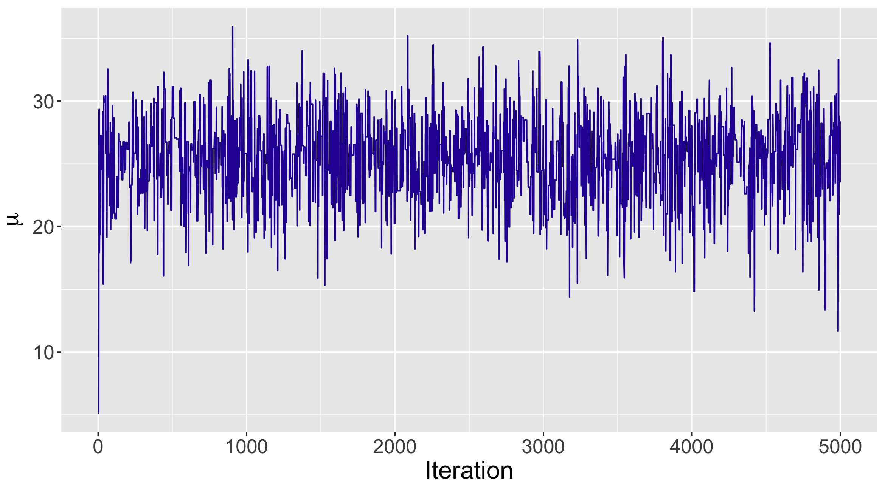
Autocorrelation plot
Since one is simulating a dependent sequence of values of the parameter, one is concerned about the possible strong correlation between successive draws of the sampler. One visualizes this dependence by computing the correlation of the pairs {\(\theta^{(j)}, \theta^{(j + l)}\)} and plotting this “lag-correlation” as a function of the lag value \(l\). This autocorrelation plot of the simulated draws from our example is displayed in Figure 5.12. If there is a strong degree of autocorrelation in the sequence, then there will be a large correlation of these pairs even for large values of the lag value. Figure 5.12 is an example of a suitable autocorrelation graph where the lag correlation values quickly drop to zero as a function of the lag value. This autocorrelation graph is another indication that the Metropolis algorithm is providing an efficient sampler of the posterior.
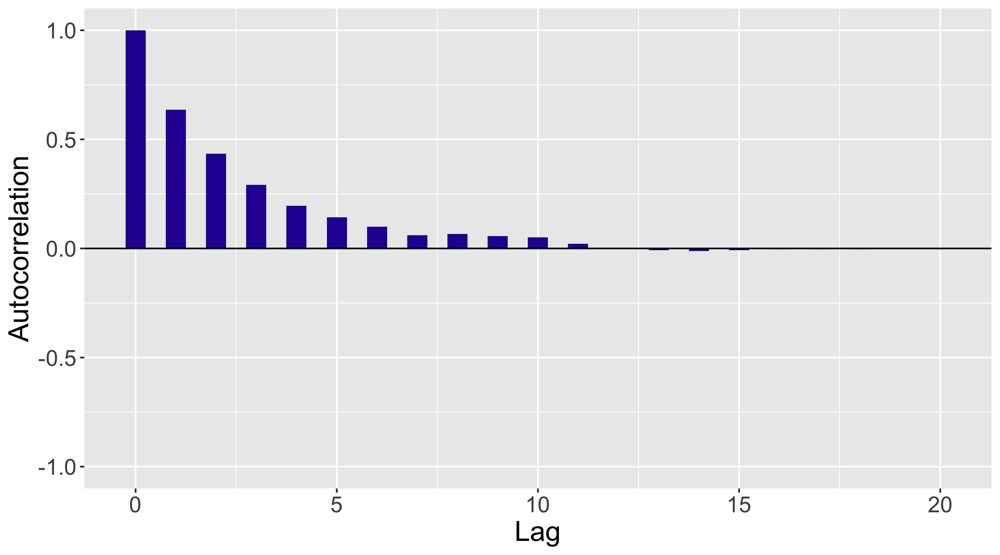
5.6.3 Graphs and summaries
If the trace plot or autocorrelation plot indicate issues with the Metropolis sampler, then the width of the proposal \(C\) should be adjusted and the algorithm run again. Since we believe that the Metropolis simulation stream is reasonable with the use of the value \(C = 20\) , then one uses a histogram of simulated draws, as displayed in Figure 5.13 to represent the posterior distribution. Alternatively, a density estimate of the simulated draws can be used to show a smoothed representation of the posterior density. Figure 5.13 places a density estimate on top of the histogram of the simulated values of the parameter \(\mu\).
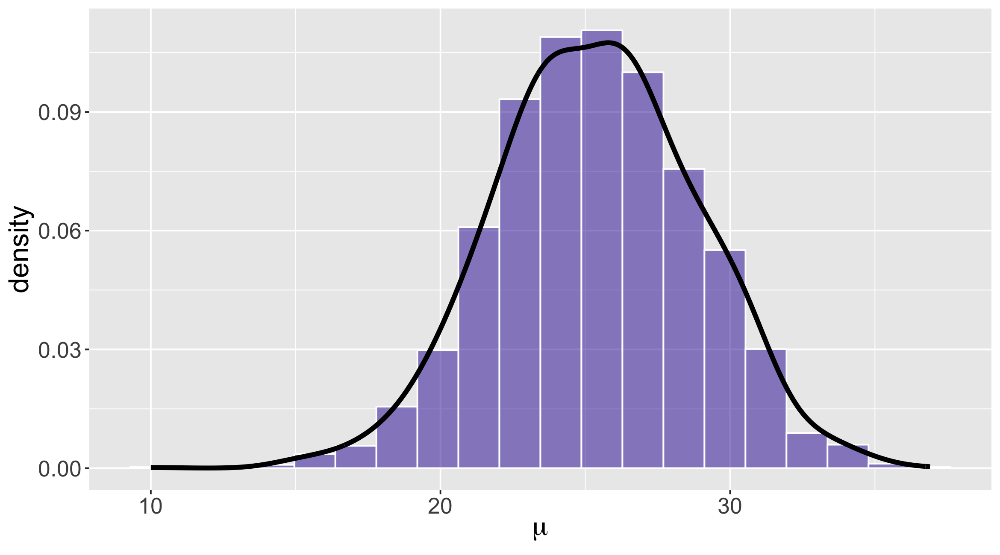
One estimates different summaries of the posterior distribution by computing different summaries of the simulated sample. In our Cauchy-Normal model, one estimates, for example, the posterior mean of \(\mu\) by computing the mean of the simulated posterior draws: \[\begin{equation} E(\mu \mid y) \approx \frac{\sum_{j = 1}^S \mu^{(j)}}{S}. \end{equation}\] One typically wants to estimate the simulation standard error of this MCMC estimate. If the draws from the posterior were independent, then the Monte Carlo standard error of this posterior mean estimate would be given by the standard deviation of the draws divided by the square root of the simulation sample size: \[\begin{equation} se = \frac{sd(\{\mu^{(j)}\})}{\sqrt{S}}. \end{equation}\] However, this estimate of the standard error is not correct since the MCMC sample is not independent (the simulated value \(\mu^{(j)}\) depends on the value of the previous simulated value \(\mu^{(j-1)}\)). One obtains a more accurate estimate of Monte Carlo standard error by using time-series methods. As we will see in the examples of Section 9.7, this standard error estimate will be larger than the “naive” standard error estimate that assumes the MCMC sample values are independent.
5.7 Using JAGS
Sections 9.3 and 9.5 have illustrated general strategies for simulating from a posterior distribution of one or more parameters. Over the years, there has been an effort to develop general-purpose Bayesian computing software that would take a Bayesian model (i.e. the specification of a prior and sampling density as input), and use an MCMC algorithm to output a matrix of simulated draws from the posterior. One of the earliest Bayesian simulation-based computing software was BUGS (for Bayesian inference Using Gibbs Sampling) and we illustrate in this text applications of a similar package JAGS (for Just Another Gibbs Sampler).
The use of JAGS has several attractive features. One defines a Bayesian model for a particular problem by writing a short script. One then inputs this script together with data and prior parameter values in a single R function from the runjags package that decides on the appropriate MCMC sampling algorithm for the particular Bayesian model. In addition, this function simulates from the MCMC algorithm for a specified number of samples and collects simulated draws of the parameters of interest.
5.7.1 Normal sampling model
To illustrate the use of JAGS, consider the problem of estimating the mean Buffalo snowfall assuming a Normal sampling model with both the mean and standard deviation unknown, and independent priors placed on both parameters. As in Section 9.5.3 one expresses the parameters of the Normal distribution as \(\mu\) and \(\phi\), where the precision \(\phi\) is the reciprocal of the variance \(\phi = 1 / \sigma^2\). One then writes this Bayesian model as
Sampling, for \(i = 1, \cdots, n\): \[\begin{equation} Y_i \overset{i.i.d.}{\sim} \textrm{Normal}(\mu, \sqrt{1/\phi}). \end{equation}\]
Independent priors for \(\mu\) and \(\phi\): \[\begin{equation} \mu \sim \textrm{Normal}(\mu_0, \sqrt{1/\phi_0}), (\#eq:muphiprior2a) \end{equation}\] \[\begin{equation} \phi \sim \textrm{Gamma}(a, b). \end{equation}\]
The JAGS program parametrizes a Normal density in terms of the precision, so the prior precision is equal to \(\phi_0 = 1 / \sigma_0^2\). As in Section 9.5.3, the parameters of the Normal and Gamma priors are set at \(\mu_0 = 10, \phi_0 = 1 / 3 ^ 2, a = 1, b = 1.\)
Describe the model by a script
To begin, one writes the following script defining this model. The model is saved in the character string modelString.
modelString = "
model{
## sampling
for (i in 1:N) {
y[i] ~ dnorm(mu, phi)
}
## priors
mu ~ dnorm(mu0, phi0)
phi ~ dgamma(a, b)
sigma <- sqrt(pow(phi, -1))
}Note that this script closely resembles the statement of the model. In the sampling part of the script, the loop structure starting with for (i in 1:N) is used to assign the distribution of each value in the data vector y the same Normal distribution, represented by dnorm. The ~ operator is read as “is distributed as”.
In the priors part of the script, in addition to setting the Normal prior and Gamma prior for mu and phi respectively, sigma <- sqrt(pow(phi, -1)) is added to help track sigma directly.
Define the data and prior parameters
The next step is to define the data and provide values for parameters of the prior. In the script below, a list the_data is used to collect the vector of observations y, the number of observations N, and values of the Normal prior parameters mu0, phi0, and of the Gamma prior parameters a and b.
buffalo <- read.csv("../data/buffalo_snowfall.csv")
data <- buffalo[59:78, c("SEASON", "JAN")]
y <- data$JAN
N <- length(y)
the_data <- list("y" = y, "N" = N,
"mu0"=10, "phi0"=1/3^2,
"a"=1,"b"=1)Define initial values
One needs to supply initial values in the MCMC simulation for all of the parameters in the model. To obtain reproducible results, one can use the initsfunction() function shown below to set the seed for the sequence of simulated parameter values in the MCMC.
initsfunction <- function(chain){
.RNG.seed <- c(1,2)[chain]
.RNG.name <- c("base::Super-Duper",
"base::Wichmann-Hill")[chain]
return(list(.RNG.seed=.RNG.seed,
.RNG.name=.RNG.name))Alternatively, one can specify the initial values by means of a function – this will be implemented when multiple chains are discussed. If no initial values are specified, then JAGS will select initial values – these are usually a ``typical” value such as a mean or median from the prior distribution.
Generate samples from the posterior distribution
Now that the model definition and data have been defined, one is ready to draw samples from the posterior distribution. The runjags provides the R interface to the use of the JAGS software. The run.jags() function sets up the Bayesian model defined in modelString. The input n.chains = 1 indicates that one stream of simulated values will be generated. adapt = 1000 says that 1000 simulated iterations are used in “adapt period” to prepare for MCMC, burnin = 1000 indicates 5000 simulated iterations are used in a “burn-in” period where the iterations are approaching the main probability region of the posterior distribution. The sample = 5000 arguments indicates that 5000 additional iterations of the MCMC algorithm will be collected. The monitor arguments says that we are collecting simulated values of the mean mu and the standard deviation sigma. The output variable posterior includes a matrix of the simulated draws. The inits = initsfunction argument indicates that initial parameter values are chosen by the initsfunction() function.
posterior <- run.jags(modelString,
n.chains = 1,
data = the_data,
monitor = c("mu", "sigma"),
adapt = 1000,
burnin = 5000,
sample = 5000,
inits = initsfunction)MCMC diagnostics and summarization
Before summarizing the simulated sample, some graphical diagnostics methods should be implemented to judge if the sample appears to “mix” or move well across the space of likely values of the parameters. The plot() function in the runjags package constructs a collection of four graphs for a parameter of interest. By running plot() for mu and sigma, we obtain the graphs displayed in Figure 5.14 and Figure 5.15.
plot(posterior, vars = "mu")
plot(posterior, vars = "sigma")Calling the simulation...
Simulation complete. Reading coda files...
Coda files loaded successfullyFinished running the simulationGenerating plots...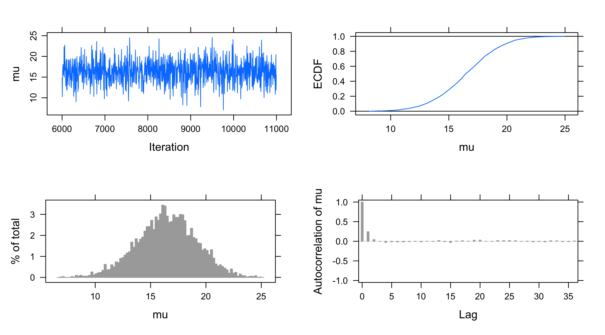
Generating plots...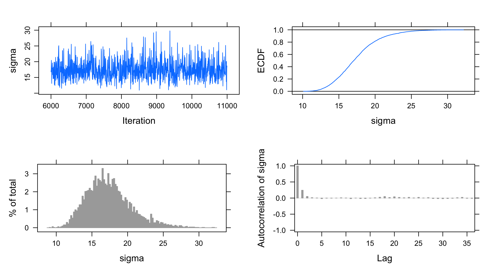
The trace and autocorrelation plots in the top left and bottom right sections of the display are helpful for seeing how the sampler moves across the posterior distribution. In Figure 5.14 and Figure 5.15, the trace plots show little autocorrelation in the streams of simulated draws and both simulated samples of \(\mu\) and \(\sigma\) appear to mix well. In the autocorrelation plots, the value of the autocorrelation drops sharply to zero as a function of the lag which confirms that we have modest autocorrelation in these samples. In each display, the bottom left graph is a histogram of the simulated draws and the top right graph is an estimate at the cumulative distribution function of the variable.
Since we are encouraged by these diagnostic graphs, we go ahead and obtain summaries of the simulated samples of \(\mu\) and \(\sigma\) by the print() function on our MCMC object. The posterior mean of \(\mu\) is 16.5. The standard error of this simulation estimate is the “MCerr” value of 0.0486 – this standard error takes in account the correlated nature of these simulated draws. A 90% probability interval for the mean \(\mu\) is found from the output to be (10.8, 21.4). For \(\sigma\), it has a posterior mean of 17.4, and a 90% probability interval (11.8, 24).
print(posterior, digits = 3)
Lower95 Median Upper95 Mean SD Mode MCerr
mu 10.8 16.5 21.4 16.5 2.68 -- 0.0486
sigma 11.8 17.1 24 17.4 3.18 -- 0.0576 5.7.2 Multiple chains
In Section 9.6.1, we explained the benefit of trying different starting values and running several MCMC chains. This is facilitated by arguments in the run.jags() function. Suppose one considers the very different pairs of starting values, \((\mu, \phi) = (2, 1 / 4)\) and \((\mu, \phi) = (30, 1/ 900)\). Note that both pair of parameter values are far outside of the region where the posterior density is concentrated. One defines a value InitialValues that is a list containing two lists, each list containing a starting value.
InitialValues <- list(
list(mu = 2, phi = 1 / 4),
list(mu = 30, phi = 1 / 900)
)The run.jags() function is run with two modifications – one chooses n.chains = 2 and the initial values are input through the inits = InitialValues option.
posterior <- run.jags(modelString,
n.chains = 2,
data = the_data,
monitor = c("mu", "sigma"),
adapt = 1000,
burnin = 5000,
sample = 5000,
inits = InitialValues)The output variable posterior contains a component mcmc which is a list of two components where posterior\$mcmc[[1]] contains the simulated draws from the first chain and posterior\$mcmc[[2]] contains the simulated draws from the second chain. To see if the MCMC run is sensitive to the choice of starting value, one compares posterior summaries from the two chains. Below, we display posterior quantiles for the parameters \(\mu\) and \(\sigma\) for each chain. Note that these quantiles are very close in value indicating that the MCMC run is insensitive to the choice of starting value.
summary(posterior$mcmc[[1]], digits = 3)
2. Quantiles for each variable:
2.5% 25% 50% 75% 97.5%
mu 10.99 14.64 16.49 18.35 21.62
sigma 12.26 15.15 17.03 19.31 25.07
summary(posterior$mcmc[[2]], digits = 3)
2. Quantiles for each variable:
2.5% 25% 50% 75% 97.5%
mu 10.97 14.59 16.55 18.33 21.54
sigma 12.21 15.08 16.96 19.18 24.995.7.3 Posterior predictive checking
In Chapter 8 Section 8.7, we illustrated the usefulness of the posterior predictive checking in model checking. The basic idea is to simulate a number of replicated datasets from the posterior predictive distribution and see how the observed sample compares to the replications. If the observed data does resemble the replications, one says that the observed data is consistent with predicted data from the Bayesian model.
For our Buffalo snowfall example, suppose one wishes to simulate a replicated sample from the posterior predictive distribution. Since our original sample size was \(n = 20\), the intent is to simulate a sample of values \(\tilde y_1, ..., \tilde y_{20}\) from the posterior predictive distribution. A single replicated sample is simulated in the following two steps.
- We draw a set of parameter values, say \(\mu^*, \sigma^*\) from the posterior distribution of \((\mu, \sigma)\).
- Given these parameter values, we simulate \(\tilde y_1, ..., \tilde y_{20}\) from the Normal sampling density with mean \(\mu^*\) and standard deviation \(\sigma^*\).
Recall that the simulated posterior values are stored in the matrix post. We write a function postpred_sim() to simulate one sample from the predictive distribution.
post <- data.frame(posterior$mcmc[[1]])
postpred_sim <- function(j){
rnorm(20, mean = post[j, "mu"],
sd = post[j, "sigma"])
}
print(postpred_sim(1), digits = 3)
[1] 5.37 10.91 40.87 15.94 16.93 43.49 22.48
[8] -6.43 3.26 7.30 35.27 20.79 21.47 16.62
[15] 5.45 44.69 23.10 -18.18 26.51 6.84If this process is repeated for each of the 5000 draws from the posterior distribution, then one obtains 5000 samples of size 20 drawn from the predictive distribution. In R, the function sapply() is used together with postpred_sim() to simulate 5000 samples that are stored in the matrix ypred.
ypred <- t(sapply(1:5000, postpred_sim))Figure 5.16 displays histograms of the predicted snowfalls from eight of these simulated samples and the observed snowfall measurements are displayed in the lower right panel. Generally, the center and spread of the observed snowfalls appear to be similar in appearance to the eight predicted snowfall samples from the fitted model. Can we detect any differences between the distribution of observed snowfalls and the distributions of predicted snowfalls? One concern is that some of the predictive samples contain negative snowfall values. Another concern from this inspection is that we observed a snowfall of 65.1 inches in our sample and none of our eight samples had a snowfall this large. Perhaps there is an outlier in our sample that is not consistent with predictions from our model.
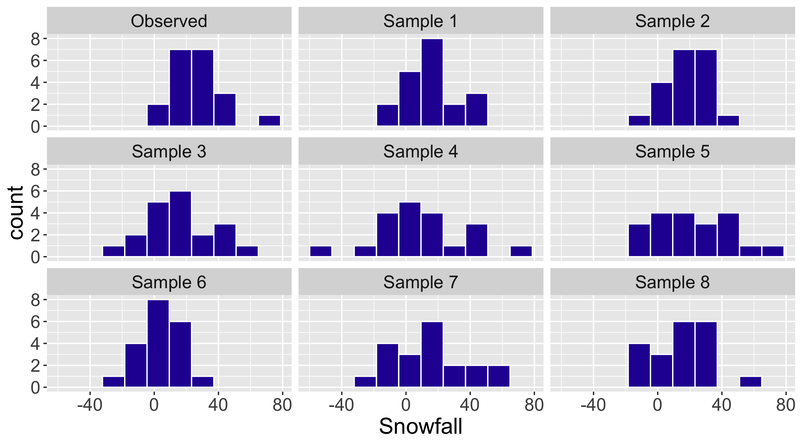
When one notices a possible discrepancy between the observed sample and simulated prediction samples, one thinks of a checking function \(T()\) that will distinguish the two types of samples. In this situation since we noticed the extreme snowfall of 65.1 inches, that suggests that we use \(T(y) = \max y\) as a checking function.
Once one decides on a checking function \(T()\), then one simulates the posterior predictive distribution of \(T(\tilde y)\). This is conveniently done by evaluating the function \(T()\) on each simulated sample from the predictive distribution. In R, this is conveniently done using the apply() function and the values of \(T(\tilde y)\) are stored in the vector postpred_max.
postpred_max <- apply(ypred, 1, max)If the checking function evaluated at the observed sample \(T(y)\) is not consistent with the distribution of \(T(\tilde y)\), then predictions from the model are not similar to the observed data and there is some issue with the model assumptions. Figure 5.17 displays a histogram of the predictive distribution of \(T(y)\) in our example where \(T()\) is the maximum function, and the observed maximum snowfall is shown by a vertical line. Here the observed maximum is in the right tail of the posterior predictive distribution – the interpretation is that this largest snowfall of 65.1 inches is not predicted from the model. In this case, one might want to think about revising the sampling model, say, by assuming that the data follow a distribution with flatter tails than the Normal.
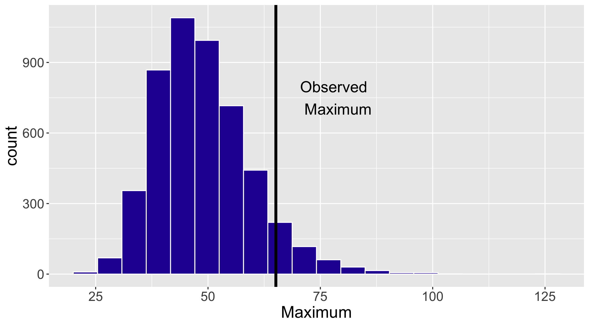
5.7.4 Comparing two proportions
To illustrate the usefulness of the JAGS software, we consider a problem comparing two proportions from independent samples. The model is defined in a JAGS script, the data and values of prior parameters are entered through a list, and the run.jags() function is used to simulate from the posterior of the parameters by an MCMC algorithm.
To better understand the behavior of Facebook users, a survey was administered in 2011 to 244 students. Each student was asked their gender and the average number of times they visited Facebook in a day. We say that the number of daily visits is “high” if the number of visits is 5 or more; otherwise it is “low”. If we classify the sample by gender and daily visits, one obtains the two by two table of counts as shown in Table 5.1.
| High | Low | |
| Male | (y_M) | (n_M - y_M) |
| Female | (y_F) | (n_F - y_F) |
In Table 5.1, the random variable \(Y_M\) represents the number of males who have a high number of Facebook visits in a sample of \(n_M\), and \(Y_F\) and \(n_M\) are the analogous count and sample size for women. Assuming that the sample survey represents a random sample from all students using Facebook, then it is reasonable to assume that \(Y_M\) and \(Y_F\) are independent with \(Y_M\) distributed Binomial with parameters \(n_M\) and \(p_M\), and \(Y_F\) is Binomial with parameters \(n_F\) and \(p_F\).
| High | Low | |
| Male | (p_M) | (1 - p_M) |
| Female | (p_F) | (1 - p_F) |
The probabilities \(p_M\) and \(p_F\) are displayed in Table 5.2. In this type of data structure, one is interested in the association between gender and Facebook visits. Define the odds as the ratio of the probability of “high” to the probability of “low”. The odds of “high” for the men and odds of ’high” for the women are defined by \[\begin{equation} \frac{p_M}{1 - p_M}, \end{equation}\] and \[\begin{equation} \frac{p_F}{1-p_F}, \end{equation}\] respectively. The odds ratio \[\begin{equation} \alpha = \frac{p_M / (1 - p_M)}{p_F / (1 - p_F)}, \end{equation}\] is a measure of association in this two-way table. If \(\alpha = 1\), this means that \(p_M = p_L\) – this says that tendency to have high visits to Facebook does not depend on gender. If \(\alpha > 1\), this indicates that men are more likely to have high visits to Facebook, and a value \(\alpha < 1\) indicates that women are more likely to have high visits. Sometimes association is expressed on a log scale – the log odds ratio \(\lambda\) is written as \[\begin{equation} \lambda = \log \alpha = \log\left(\frac{p_M} {1 - p_M}\right) - \log\left(\frac{p_F} {1 - p_F}\right). \end{equation}\] That is, the log odds ratio is expressed as the difference in the logits of the men and women probabilities, where the logit of a probability \(p\) is equal to \({ logit}(p) = \log(p) - \log(1 - p)\). If gender is independent of Facebook visits, then \(\lambda = 0\).
One’s prior beliefs about association in the two-way table is expressed in terms of logits and the log odds ratio. If one believes that gender and Facebook visits are independent, then the log odds ratio is assigned a Normal prior with mean 0 and standard deviation \(\sigma\). The mean of 0 reflects the prior guess of independence and \(\sigma\) indicates the strength of the belief in independence. If one believed strongly in independence, then one would assign \(\sigma\) a small value.
In addition, let \[\begin{equation} \theta = \frac{{ logit}(p_M) + {logit}(p_F)}{2} \end{equation}\] be the mean of the logits, and assume that \(\theta\) has a Normal prior with mean \(\theta_0\) and standard deviation \(\sigma_0\) (precision \(\phi_0\)). The prior on \(\theta\) reflects beliefs about the general size of the proportions on the logit scale.
To fit this model using JAGS, the following script, saved in modelString, is written defining the model.
modelString = "
model{
## sampling
yF ~ dbin(pF, nF)
yM ~ dbin(pM, nM)
logit(pF) <- theta - lambda / 2
logit(pM) <- theta + lambda / 2
## priors
theta ~ dnorm(mu0, phi0)
lambda ~ dnorm(0, phi)
}
"In the sampling part of the script, the two first lines define the Binomial sampling models, and the logits of the probabilities are defined in terms of the log odds ratio lambda and the mean of the logits theta. In the priors part of the script, note that theta is assigned a Normal prior with mean mu0 and precision phi0, and lambda is assigned a Normal prior with mean 0 and precision phi.
When the sample survey is conducted, one observes that 75 of the 151 female students say that they are high visitors of Facebook, and 39 of the 93 male students are high visitors. This data and the values of the prior parameters are entered into R by use of a list. Note that phi = 2 indicating some belief that gender is independent of Facebook visits, and mu0 = 0 and phi0 = 0.001 reflecting little knowledge about the location of the logit proportions. Using the run.jags() function, we take an adapt period of 1000, burn-in period of 5000 iterations and collect 5000 iterations, storing values of pF, pM and the log odds ratio lambda.
the_data <- list("yF" = 75, "nF" = 151,
"yM" = 39, "nM" = 93,
"mu0" = 0, "phi0" = 0.001, "phi" = 2)
posterior <- run.jags(modelString,
data = the_data,
n.chains = 1,
monitor = c("pF", "pM", "lambda"),
adapt = 1000,
burnin = 5000,
sample = 5000)Since the main goal is to learn about the association structure in the table, Figure 5.18 displays a density estimate of the posterior draws of the log odds ratio \(\lambda\). A reference line at \(\lambda = 0\) is drawn on the graph which corresponds to the case where \(p_M = p_L\). What is the probability that women are more likely than men to have high visits in Facebook? This is directly answered by computing the posterior probability \(Prob(\lambda < 0 \mid data)\) that is computed to be 0.874. Based on this computation, one concludes that it is very probable that women have a higher tendency than men to have high visits on Facebook.
post <- data.frame(posterior$mcmc[[1]])
post %>%
summarize(Prob = mean(lambda < 0))
Prob
1 0.874Calling the simulation...
Simulation complete. Reading coda files...
Coda files loaded successfullyFinished running the simulation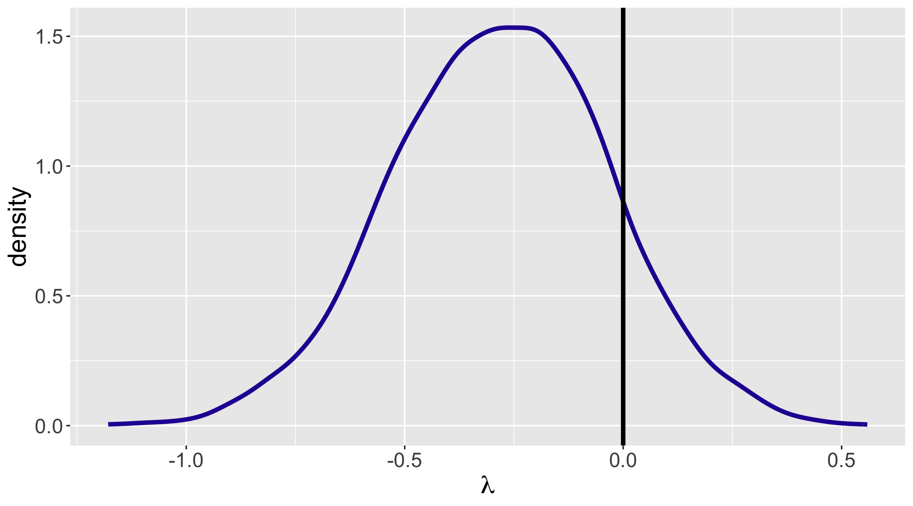
5.8 Exercises
- Normal and Cauchy Priors
In the example in Section 9.1.2, it was assumed that the prior for the average snowfall \(\mu\) was Normal with mean 10 inches and standard deviation 3 inches.
- Confirm that the 25th and 75th percentiles of this prior are equal to 8 and 12 inches, respectively.
- Show that under this Normal prior, it is unlikely that the mean \(\mu\) is at least as large as 26.75 inches.
- Confirm that a Cauchy distribution with location 10 inches and scale parameter 2 inches also have 25th and 75th percentiles equal to 8 and 12 inches, respectively.
- A Random Walk
The following matrix represents the transition matrix for a random walk on the integers {1, 2, 3, 4, 5}.
\[ P = \begin{bmatrix} .2 &.8& 0& 0& 0 \\ .2 &.2& .6& 0& 0\\ 0 &.2& .6& .2& 0\\ 0 &0& .6& .2& .2\\ 0 &0& 0& .8& .2\\ \end{bmatrix} \]
- Suppose one starts walking at the state value 4. Find the probability of landing at each location after a single step.
- Starting at value 4, find the probability of landing at each location after three steps.
- Explain what is means for this Markov Chain to be irreducible and aperiodic.
- A Random Walk (continued)
Consider the random walk Markov chain described in Exercise 2.
- Suppose one starts at the location 1. Using an R script with the
sample()function (see example script Section 9.2.3), simulate 1000 steps of the Markov chain using the probabilities given in the transition matrix. Store the locations of the walk in a vector. - Compute the relative frequencies of the walker in the five states from the simulation output. From this computation, guess at the value of the stationary distribution vector \(w\).
- Confirm that your guess is indeed the stationary distribution by using the matrix computation \(w\) %*% \(P\).
- Weird Weather
Suppose a city in Alaska has interesting weather. The four possible weather states are “sunny” (\(SU\)), “rainy” (\(R\)), “cloudy” (\(C\)), and “snow” (\(SN\)). If it is sunny one day, it is equally likely to be rainy, cloudy, and snow on the next day. If is currently rainy, then the probabilities of sunny, rain, cloudy, and snow on the next day are respectively 1/2, 1/6, 1/6, and 1/6. The following matrix gives the transitions of weather from one day to the next day.
\[ \begin{bmatrix} & SU & R & C & SN \\ SU & 0 & 1/3 & 1/3 & 1/3 \\ R & 1/2 & 1/6 & 1/6 & 1/6 \\ C & 0 & 1/4 & 1/2 & 1/4 \\ SN & 0 & 1/4 & 1/4 & 1/2 \\ \end{bmatrix} \]
- If the weather is rainy today, find the probability that is rainy two days later.
- Starting with a sunny day, write an R script to simulate 1000 days of weather using this Markov Chain.
- Find the relative frequencies of the four states. Are these values approximately the stationary distribution of the Markov chain?
- Ehrenfest Urn Model
Grinstead and Snell (2006) describe a model used to explain diffusion of gases. One version of this model is described in the setting of two urns that, between them, contains four balls. A state is the number of balls in the first urn. There are five possible states 0, 1, 2, 3, and 4. At each step, one ball is chosen at random and moved from the urn it is located to the other urn. The transition matrix for this Markov chain is shown below:
\[ P = \begin{bmatrix} 0 &1 & 0& 0& 0 \\ 1/4 & 0 & 3/4 & 0& 0\\ 0 & 1/2& 0& 1/2& 0\\ 0 &0& 3/4 & 0& 1/4\\ 0 &0& 0& 1& 0\\ \end{bmatrix} \]
- Starting at state 1, find the probabilities of each state after two steps.
- Starting at state 1, find the probabilities of each state after three steps.
- Explain why this Markov Chain is not aperiodic.
- Does a stationary distribution exist for this Markov Chain? Why or why not?
- Metropolis Sampling in a Random Walk
Suppose the variable \(X\) takes on values from 1 to 9 with respective probabilities that are proportional to the values 9, 7, 5, 3, 1, 3, 5, 7, 9. This probability distribution displayed in Figure 5.19 has a “bathtub” shape.
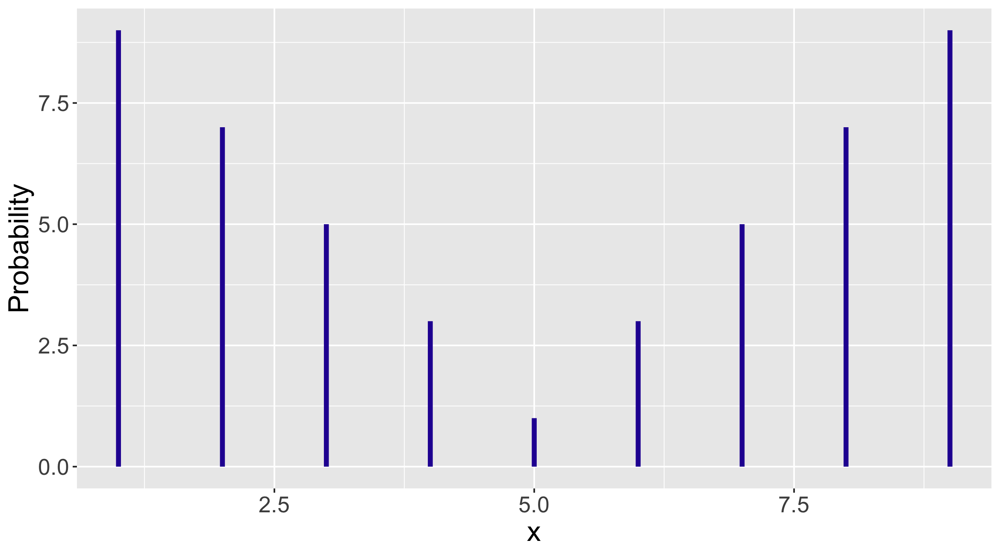
- Write an R function that computes this probability distribution for any value of \(X\).
- Using the Metropolis algorithm described in Section 9.3.1 as programmed in the function
random_walk(), simulate 10,000 draws from this probability distribution starting at the value \(X = 2\). - Collect the simulated draws and find the relative frequencies of the values 1 through 9. Compare these approximate probabilities with the exact probabilities.
- Metropolis Sampling of a Binomial Distribution
- Using the Metropolis algorithm described in Section 9.3 as programmed in the function
random_walk(), simulate 1000 draws from a Binomial distribution with parameters \(n = 20\) and \(p = 0.3\). - Collect the simulated draws and find the relative frequencies of the values 0 through 20. Compare these approximate probabilities with the exact probabilities.
- Using the simulated values, estimate the mean \(\mu\) and standard deviation \(\sigma\) of the distribution and compare these estimates with the known values of \(\mu\) and \(\sigma\) of a binomial distribution.
- Metropolis Sampling - Poisson-Gamma Model
Suppose we observe \(y_1, ..., y_n\) from a Poisson distribution with mean \(\lambda\), and the parameter \(\lambda\) has a Gamma(\(a, b\)) distribution. The posterior density is proportional to \[\begin{equation*} \pi(\lambda \mid y_1, \cdots, y_n) \propto \left[\prod_{i = 1}^n \exp(-\lambda) \lambda^{y_i} \right] \left[ \lambda^{a-1} \exp(-b \lambda) \right]. \end{equation*}\]
Write a function to compute the logarithm of the posterior density. Assume that one observes the sample 2, 5, 10, 5, 6, and the prior parameters are \(a = b = 1\).
Use the
metropolis()function in Section 9.3.3 to collect 1000 draws from the posterior distribution. Use a starting value of \(\lambda = 5\) and a neighborhood scale value of \(C = 2\).Inspect MCMC diagnostic graphs to assess if the simulated sample approximates the posterior density of \(\lambda\).
- Metropolis Sampling from a Bimodal Distribution
Suppose we observe a random sample \(y_1, ..., y_n\) from a Cauchy distribution with location \(\theta\) and scale parameter 1 with density \[\begin{equation} f(y_i \mid \theta) = \frac{1}{\pi \left[1 + (y_i - \theta)^2\right]}. (\#eq:cauchy) \end{equation}\] If a Uniform prior is placed on \(\theta\), then the posterior density of \(\theta\) is proportional to \[\begin{equation} \pi(\theta \mid y_1, \cdots, y_n) \propto \prod_{i = 1}^n \frac{1}{\pi \left[1 + (y_i - \theta)^2\right]} (\#eq:cauchypost) \end{equation}\] If we observe the values 3, 6, 7, 8, 15, 14, 16, 17, Figure 5.20 displays the bimodal shape of the posterior density.
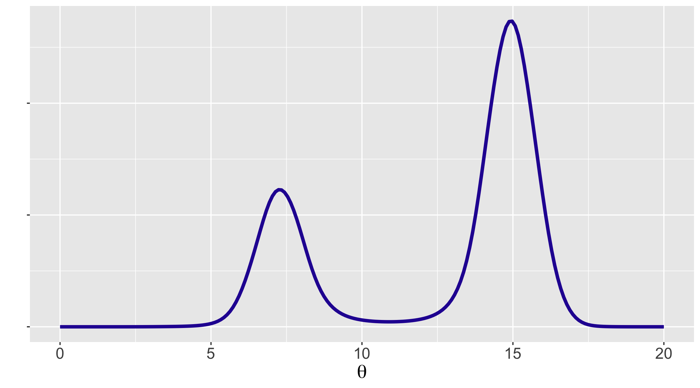
- Write a function to compute the logarithm of the posterior density.
- Using the
metropolis()function in Section 9.3.3, collect a simulated sample of 1000 from the posterior distribution. Run the sampler twice, once using a starting value of \(\theta = 10\) and a neighborhood scale value of \(C = 3\), and a second time with the same starting value and a scale value of \(C = 0.2\). - By inspecting MCMC diagnostic graphs, which value of \(C\) appears to result in a simulated sample that is a better approximation to the posterior distribution? Explain.
- Gibbs Sampling - Poisson-Gamma Model
Suppose a single observation \(Y\) conditional on \(\lambda\) is Poisson with mean \(\lambda\), and \(\lambda\) has a Gamma(\(a, b\)) prior with density equal to \[\begin{equation*} \pi(\lambda) = \frac{b^a}{\Gamma(a)} \lambda^{a-1} \exp(-b \lambda). \end{equation*}\]
- Write down the joint density of \(Y\) and \(\lambda\).
- Identify the conditional distribution \(Y\) conditional on \(\lambda\), and the conditional distribution of \(\lambda\) conditional on \(Y = y\).
- Use the information from part (b) to construct a Gibbs sampling algorithm to sample from the joint distribution of \((Y, \lambda)\).
- Write an R function to implement one cycle of Gibbs sampling, and run 1000 iterations of Gibbs sampling for the case where \(a = 3\) and \(b = 3\).
- By integration, find the marginal density of \(Y\). Compare the exact values of the marginal density with the simulated draws of \(Y\) found using Gibbs sampling.
- Gibbs Sampling - Coin Flips
Suppose one observes the outcomes of four fair coin flips \(W_1, ..., W_4\) where \(W_i = 1\) if the outcome is heads and \(W_i = 0\) otherwise. Let \(X = W_1 + W_2 +W_3\) denote the number of heads in the first three flips and \(Y = W_2 + W_3 + W_4\) is the number of heads in the last three flips. The joint probability of \(X\) and \(Y\) is given in Table 5.3.
| (Y) | |||||
| 0 | 1 | 2 | 3 | ||
| 0 | 1/16 | 1/16 | 0 | 0 | |
| (X) | 1 | 1/16 | 3/16 | 2/16 | 0 |
| 2 | 0 | 2/16 | 3/16 | 1/16 | |
| 3 | 0 | 0 | 1/16 | 1/16 |
- Find the conditional distribution \(f(x \mid Y = 1)\).
- Find the conditional distribution \(f(y \mid X = 2)\).
- Describe how Gibbs sampling can be used to simulate from the joint distribution of \(X\) and \(Y\).
- Using the
gibbs_discrete()function in Section 9.5.1, simulate 1000 iterations of Gibbs sampling using this probability distribution. By tabulating the \((X, Y)\) output and computing relative frequencies, confirm that the relative frequencies are good approximations to the actual probabilities.
- Normal Sampling with Both Parameters Unknown
The heights in inches of 20 college women were collected, observing the following measurements:
| 47 | 64 | 61 | 61 | 63 | 61 | 64 | 66 | 63 | 67 |
| 63.5 | 65 | 62 | 64 | 61 | 56 | 63 | 65 | 64 | 59 |
Suppose one assumes that the Normal mean and precision parameters are independent with \(\mu\) distributed \(\textrm{Normal}(62, 1)\) and \(\phi\) distributed Gamma with parameters \(a = 1\) and \(b = 1\).
- Using the
gibbs_normal()function in Section 9.5.3, collect a sample of 5000 from the joint posterior distribution of \((\mu, \phi)\). - Find a 90% interval estimate for the standard deviation \(\sigma = 1 / \sqrt{\phi}\).
- Suppose one is interested in estimating the 90th percentile of the height distribution \(P_{90} = \mu + 1.645 \sigma\). Collect simulated draws from the posterior of \(P_{90}\) and construct a density estimate.
- Normal Sampling with Both Parameters Unknown (continued)
In Exercise 12, one learned about the mean and precision of the heights by use of a Gibbs sampling algorithm. Use JAGS and the runjags package to collect MCMC draws from this model. Write a JAGS script for this Normal sampling problem and use the run.jags() function. Answer questions from parts (c) and (d) from Exercise 12. (Note that the sample JAGS script in Section 9.7.1 returns samples of \(\mu\) and \(\sigma\).)
- Normal Sampling with Both Parameters Unknown (continued)
If one graphs the height data from Exercise 12, one notes that there is one unusually small height value, 47. One wonders if this minimum height is consistent with the fitted model.
- Write a function to simulate a sample of size 20 from the posterior predictive distribution. You can use either the
gibbs_normal()function in Section 9.5.3 or the JAGS sample script in Section 9.7.1 to generate a sample from the posterior distribution of (\(\mu, \phi\)) or (\(\mu, \sigma\)). For each sample, compute the minimum value \(T(\tilde y)\). - Repeat the procedure 1000 times, collecting a sample of the predictive distribution of the minimum observation.
- Graph the predictive distribution. From comparing the observed minimum height with this distribution, what can you conclude about the suitability of the model?
- Comparing Proportions
In Section 9.7.4, the problem of comparing proportions of high visits to Facebook from male and female students was considered.
- Using the same prior, use JAGS to take a simulated sample of size 5000 from the posterior of \(p_F\) and \(p_M\). Construct a 90% probability interval estimate for the difference is proportions \(\delta = p_W - p_M\).
- Use the same simulated sample to perform inferences about the ratio of proportions \(R = p_W / p_M\). Construct a density estimate of \(R\) and construct a 90% probability interval estimate.
- Comparing Poisson Rates
Suppose the number of customers \(y_j\) arriving at a bank during a half-hour period in the morning is Poisson with mean \(\lambda_M\), and the number of customers \(w_j\) arriving in an afternoon half-hour period is Poisson with mean \(\lambda_A\). Suppose one observes the counts 3, 3, 6, 3, 2, 3, 7, 6 for the morning periods, and the counts 11, 3, 9, 10, 10, 5, 8, 7 for the afternoon periods. Assume that \(\lambda_M\) and \(\lambda_A\) have independent Gamma(1, 1) priors. Use JAGS to obtain a simulated sample from the joint posterior of \((\lambda_M, \lambda_A)\) and use the output to obtain a 90% posterior interval estimate for the ratio of means \(R = \lambda_A / \lambda_M\).
- Normal Sampling with a Cauchy Prior
In Section 9.4, we considered the problem of estimating the mean snowfall amount in Buffalo with a Cauchy prior. The sample mean \(\bar y\) is Normal with mean \(\mu\) and standard error \(se\) and \(\mu\) is Cauchy with location 10 and scale 2. In our problem, \(\bar y= 26.785\) and \(se = 3.236\). Write a JAGS script for this Bayesian model. Use the run.jags() function to simulate 1000 draws of the posterior distribution for \(\mu\). Compute the posterior mean and posterior standard deviation for \(\mu\).
- Normal Sampling with a Cauchy Prior (continued)
In Exercise 17, one used JAGS to simulate values from the posterior of \(\mu\) from a single MCMC chain. Instead use two chains with the different starting values of \(\mu = 0\) and \(\mu = 50\). Run JAGS with two chains and estimate the posterior mean and posterior standard deviation using output from each of the two chains. Based on the output, comment on the sensitivity of the MCMC run with the choice of the starting value.
- Bivariate Normal
Section 6.7 introduced the Bivariate Normal distribution. Suppose we wish to use Gibbs sampling to simulate from this distribution. In the following assume \((X, Y)\) is Bivariate Normal with parameters \((\mu_X, \mu_Y, \sigma_X, \sigma_Y, \rho)\).
- Using results from Section 6.7, identify the two conditional distributions \(f(x \mid y)\) and \(f(y \mid x)\) and write down a Gibbs sampling algorithm for simulating from the joint distribution of \((X, Y)\).
- Write an R function to simulate a sample from the distribution using Gibbs sampling.
- Assume \(\mu_X = 0, \mu_Y = 0, \sigma_X = 1, \sigma_Y = 1, \rho = 0.5\) and run the simulation for 1000 iterations. Compare the means, standard deviations, and correlation computed from the simulation with the true values of the parameters.
- Repeat part (c) using the correlation value \(\rho= 0.95\) and again compare the simulation estimates with the true values. Explain why Gibbs sampling does not appear to work as well in this situation.
- A Normal Mixture Model
Consider a three-component mixture distribution, where the density for \(x\) has the form \[\begin{equation} f(x) = 0.45 \times \phi(x, -3, 1/3) + 0.1 \times \phi(x, 0, 1/3) + 0.45 \times \phi(x, 3, 1/3), \\ (\#eq:normalmix) \end{equation}\] where \(\phi(x, \mu, \sigma)\) is the Normal density with mean \(\mu\) and standard deviation \(\sigma\). Consider the following two ways of simulating from this mixture density.
Approach 1: Monte Carlo: Introduce a “mixture component indicator”, \(\delta\), an unobserved latent variable. The variable \(z\) is equal to 1, 2, and 3 with respective probabilities 0.45, 0.1, and 0.45. The density for \(x\) conditional on \(z\) is normal where \([x \mid z = 1] \sim \textrm{Normal}(-3, 1/3)\), \([x \mid z = 2] \sim \textrm{Normal}(0, 1/3)\), and \([x \mid z = 3] \sim \textrm{Normal}(3, 1/3)\).
One simulates \(x\) by first simulating a value of \(z\) from its discrete distribution and then simulating a value of \(x\) from the corresponding conditional distribution. By repeating this method, one obtains a Monte Carlo simulated sample from the exact mixture distribution.
Approach 2: Gibbs Sampling: An alternative way of simulating from the mixture density is based on Gibbs sampling. Introduce the latent variable \(z\) and consider the two conditional distributions \([x \mid z]\) and \([z \mid x]\). The conditional distribution \([x \mid z]\) will be a Normal density where the Normal parameters depend on the value of the latent variable. The conditional distribution \([z \mid x]\) is discrete on the values 1, 2, 3 where the probabilities are proportional to \(0.45 \times \phi(x, -3, 1/3)\), \(0.1 \times \phi(x, 0, 1/3)\), \(0.45 \times \phi(x, 3, 1/3)\) respectively.
Write R scripts to use both the Monte Carlo and Gibbs sampling methods to simulate 1000 draws from this mixture density.
- A Normal Mixture Model – MCMC Diagnostics
Figure 5.21 displays histograms of simulated draws from the mixture distribution using the Monte Carlo and Gibbs sampling algorithms, and the exact mixture density is overlaid on top. It is clear from the figure that the Gibbs sampling does not appear to perform as well as the Monte Carlo method in simulating from this distribution. Using MCMC diagnostic graphs, explore the Gibbs sampling output. Are there particular features in these diagnostic graphs that would indicate problems in the convergence of the Gibbs sampling algorithm?
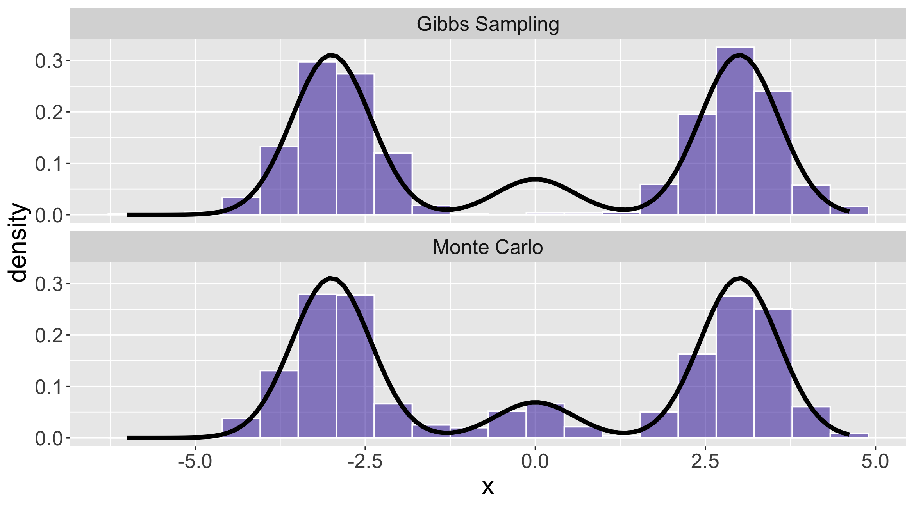
- Change Point Analysis
The World Meteorological Association collects data on tropical storms, and scientists want to find out whether the distribution of storms changed over time, and if so, when. Data on the number of storms per year has been collected for \(n\) years, and let \(y_i\) be the number of storms in year \(i\), where \(i = 1, \cdots, n\). Let \(M\) be the year in which the distribution of \(Y\) changes, where \(M \in \{1, \cdots, n-1\}\).
A reasonable sampling model for \(Y\) is: \[\begin{eqnarray*} y_i \mid \lambda_1, M &\sim& \textrm{Poisson}(\lambda_1), \,\,\, i = 1, \cdots, M; \\ y_i \mid \lambda_2, M &\sim& \textrm{Poisson}(\lambda_2), \,\,\, i = M+1, \cdots, n. \end{eqnarray*}\]
Suppose one gives a Uniform prior for \(M\) over integers from \(1\) to \(n-1\) to represent complete uncertainty about change point: \[\begin{equation*} M \mid \lambda_1, \lambda_2 \sim \textrm{Discrete}(\frac{1}{n-1}, \cdots, \frac{1}{n-1}), \,\,\, M \in \{1, \cdots, n-1\}. \end{equation*}\] Equivalently, you can think of the Uniform prior as: \[\begin{equation*} Prob(M = m) = \frac{1}{n-1}, \,\,\, M \in \{1, \cdots, n-1\}. \end{equation*}\]
Recall that Gamma distributions are conjugate prior distributions for Poisson data model. Suppose one uses independent conjugate Gamma priors for \(\lambda_1\) and \(\lambda_2\): \[\begin{eqnarray*} \lambda_1 \mid a_1, b_1 &\sim& \textrm{Gamma}(a_1, b_1), \\ \lambda_2 \mid a_2, b_2 &\sim& \textrm{Gamma}(a_2, b_2). \end{eqnarray*}\]
Write the joint posterior distribution, \(\pi(\lambda_1, \lambda_2, M \mid y_1, \cdots, y_n)\), up to a constant.
Find the full conditional posterior distribution for \(\lambda_1\) and \(\lambda_2\). Write the name of the distributions and expressions for their parameter values.
Find the full conditional posterior distribution for \(M\), which should be a discrete distribution over \(m = 1, \cdots, n-1\).
Describe how you would design a Gibbs sampling to simulate posterior draws of the set of parameters, \((\lambda_1, \lambda_2, M)\).